Effective properties of ageing linear viscoelastic media with spheroidal inhomogeneities
The paper focuses on the construction of one particle homogenization schemes for an ageing linear viscoelastic composite. The composite consists of an isotropic host matrix and randomly located spheroidal inhomogeneities. Both phases are assumed to be ageing linear viscoelastic. Expressions for the effective viscoelastic properties in the frameworks of Non Interaction Approximation as well as Maxwell and Mori-Tanaka-Benveniste homogenization schemes are derived. A special attention is paid to the far-field solution to the one-particle problem since it plays a major role in the Maxwell scheme.
Micromechanics, Ageing, Viscoelasticity, Random media, Fraction exponential kernel, Maxwell scheme
Author-accepted manuscript (postprint). This is the accepted version of an article published by Elsevier in the International Journal of Engineering Science. The version of record is available at doi:10.1016/j.ijengsci.2019.05.015. Please cite as: J.-F. Barthélémy, A. Giraud, J. Sanahuja, I. Sevostianov, “Effective properties of ageing linear viscoelastic media with spheroidal inhomogeneities”, International Journal of Engineering Science 144 (2019) 103104. © 2019 Elsevier Ltd. All rights reserved.
This author-accepted manuscript is made available under the Creative Commons Attribution-NonCommercial-NoDerivatives 4.0 International (CC BY-NC-ND 4.0) license. 
1 Introduction
We develop a methodology to estimate overall viscoelastic properties of heterogeneous materials accounting for ageing of the constituents. Ageing of materials is an undesirable, but unavoidable, process that can lead to (non-reversible) changes in mechanical and physical properties of materials. From the mechanical point of view, when materials age, they become more brittle. The origin of these property changes can be innate to the material or caused by influences from the environment. Ageing may be broadly categorized by three primary mechanisms: chemical, physical and mechanical. The interaction between these three areas is highly dependent on two variables: material characteristics, and ageing environment ((Gates, 2008)). Physical ageing can take place as molecular rearrangement, demixing or crystal growth. Chemical ageing results in changes of the chemical composition of the material by chemical reactions ((Kommling et al., 2018)). Ageing of polymeric materials may consist of two pathways: formation of additional crosslinks and chain scission ((Ehrenstein and Pongratz, 2007)). At the late stages ageing of polymers can be visible in the form of either heterogeneities or microcracks (see figure Fig. 1 from (Ryszkowska and Salasinska, 2011)). At the present time there are no reliable micromechanical models that allow calculation of the overall material properties of composites accounting for ageing of the constituents ((Breugel et al., 2018)). Our approach is based on recent results of (Barthélémy et al., 2016) who calculated ageing linear viscoelastic (ALV) Eshelby tensor for an ellipsoidal inhomogeneity. In the first part of the paper, after recalling the main results available for the ALV Eshelby problem, the far-field expression of the solution to this problem is derived. This expression as well as ALV contribution tensors are then exploited to extend to the ageing linear viscoelasticity framework the classical homogenization techniques developed in linear elasticity. The efficient numerical procedure proposed by (Baz̆ant, 1972) for ageing concrete and by (Lavergne et al., 2016; Sanahuja, 2013) for ageing composites allows discretization of Volterra integral operator and provides a simple practical tool to implement homogenization schemes. A validation of this numerical technique is then presented in the framework of non ageing linear viscoelasticity – the results are compared with the reference solution obtained by using fraction-exponential operators approach developed by (Sevostianov et al., 2016, 2015; Sevostianov and Levin, 2015). Fraction-exponential operators are extensively used in rheology and linear viscoelasticity (see, for example, books of (Gorenflo, 1997; Mainardi, 2010; Podlubny, 1999)) due to their ability to fit experimental results using several parameters that have clear physical meaning. They have been applied to Eshelby inhomogeneity problem and related homogenization approach to obtain solutions for elliptical cracks in a viscoelastic matrix (see (Levin et al., 2012)). In this paper, the Maxwell homogenization scheme, reformulated in the papers of (Sevostianov et al., 2015; Sevostianov, 2014; Sevostianov and Giraud, 2013) in a way that remains consistent here with the ALV framework, is applied to the calculation of effective properties of a two phase isotropic material which consists of an ALV matrix and a random set of spheroidal ALV inhomogeneities. Two cases are considered. The first one focuses on the inhomogeneities which are stiffer than the matrix. This case may be encountered in matrix composite geomaterials such as cement based materials ((Sanahuja, 2013)) or argillaceous rocks such as shale and argillites. The second case corresponds to a matrix softened by fluid saturated pores or softer inhomogeneities. In both cases, a discussion on interaction of inhomogeneities is performed by comparison of Maxwell homogenization scheme formulated in terms of creep or relaxation contribution tensors ((Sevostianov and Levin, 2015)) with the Non Interaction Approximation (NIA).
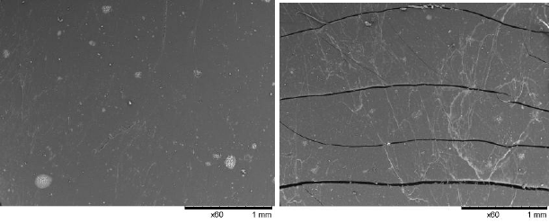
2 The ageing linear viscoelastic behaviour and the Eshelby problem
2.1 The ageing linear viscoelastic behaviour
In ageing linear viscoelasticity the strain and stress tensor histories, respectively \(\eps(t)\) and \(\sig(t)\), are related by means of a Stieltjes integral ((Salençon, 2009))
\[ \wideeq{\eps(t)=\int_{t'=-\infty}^t \Lquat(t,t'):\ud \sig(t') =\int_{t'=-\infty}^t \Lquat(t,t'): \dot{\sig}(t') \ud t'} \tag{1}\]
where \(\Lquat\) is the creep compliance tensor of the fourth order. In the general ageing framework, it depends on two independent time variables and is such that \(\Lquat(t,t')=\Oquat\) if \(t<t'\) due to the causality principle. The non-ageing case corresponds to a dependence of \(t\) and \(t'\) only through their difference \(t-t'\). The resolution of the Eshelby problem in the latter case is already available thanks to the correspondence principle and the resolution of the associated elastic problem in the Laplace-Carson domain ((Christensen, 1982, 1969; Hashin, 1970a, 1970b; Hashin, 1965; Sevostianov et al., 2015)). The present paper deals also with the more general ageing case.
The linear relationship Eq. 1, more simply denoted by \(\eps=\Lquat\tvolt\sig\) ((Lavergne et al., 2016; Sanahuja, 2013)) in which the time dependencies have been omitted for the sake of conciseness, generalizes to the tensor framework the so-called Volterra operator ’‘\(\volt\)’’ (Volterra, 1959) between scalar functions
\[ \wideeq{Y =F\volt X \Leftrightarrow Y(t)=\int_{t'=-\infty}^t F(t,t')\ud X(t')} \tag{2}\]
Adopting the convention of summation of repeated indices, Eq. 1 writes in components
\[ \wideeq{\eps=\Lquat \tvolt \sig \Leftrightarrow \varepsilon_{ij}=L_{ijkl} \volt \sigma_{kl}} \tag{3}\]
\(\Lquat(t,t')\) verifies the minor symmetries \(L_{jikl}(t,t')=L_{ijlk}(t,t')=L_{ijkl}(t,t')\). As stated in (Barthélémy et al., 2016), time discontinuities are allowed in all the functions involved in the previous relationships and time derivatives must be considered in the framework of the theory of distributions as introduced by (Gel’fand and Shilov, 1964; Schwartz, 1966). The scalar Volterra kernel \((t,t')\mapsto \heaviside(t-t')\) where \(\heaviside\) is the Heaviside function (\(\heaviside(t)=1\) if \(t\geq 0\) and \(\heaviside(t)=0\) if \(t<0\)) operates as an identity in (Eq. 2). For the sake of commodity, \(\heaviside\) shall also denote this function of two time variables in the following, i.e. \(\heaviside\volt X=X\). As a consequence, the identity of (Eq. 1) is \(\heaviside\,\idq\), where \(\idq\) is the fourth-order identity tensor acting over symmetric second-order tensors (\(\idq_{ijkl}=(\delta_{ik}\delta_{jl}+\delta_{il}\delta_{jk})/2\)) with \(\delta_{ij}\) denoting the Kronecker symbol (\(\delta_{ij}=1\) if \(i=j\) and \(\delta_{ij}=0\) if \(i\neq j\)).
The product Eq. 2 between a scalar function of two time variables and a scalar function of a single time variable can be extended to a product between two scalar functions of two time variables
\[ \wideeq{(A \volt B) (t,t')=\int_{\tau=-\infty}^t A(t,\tau) \frac{\partial B}{\partial \tau}(\tau,t')\ud \tau} \tag{4}\]
This operation is associative and distributive with respect to the addition but, as stated in (Maghous and Creus, 2003), the commutativity holds only for non-ageing kernels. The extension of the product between functions of two time variables can also be considered for the double contraction of tensor kernels
\[ \wideeq{(\Aquat \tvolt \Bquat) (t,t')=\int_{\tau=-\infty}^t \Aquat(t,\tau): \frac{\partial \Bquat}{\partial \tau}(\tau,t')\ud \tau} \tag{5}\]
Here again, this operation remains associative and distributive with respect to the addition whereas the non-ageing property of both kernels is not sufficient anymore to ensure commutativity since tensors are involved in the integral Eq. 5: the commutativity between the tensors themselves should also be required.
The inverse of a (scalar or tensor) kernel \(\mathcal{T}(t,t')\) in the sense of Volterra is denoted \(\invvolt{\mathcal{T}}(t,t')\). The inverse of the creep compliance \(\Lquat\), called the relaxation tensor and denoted by \(\Cquat(t,t')=\invvolt{\Lquat}(t,t')\), satisfies \(\Cquat(t,\cdot)\tvolt\Lquat(\cdot,t')=\Lquat(t,\cdot) \tvolt\Cquat(\cdot,t')=\heaviside(t,t')\idq\).
It is worth recalling here that the elastic behaviour is a particular case of the ALV one. Indeed the ageing linear viscoelastic counterparts in terms of Volterra kernels of elastic tensors (stiffness, compliance, concentration tensors) are simply built by multiplying the latter by \(\heaviside(t,t')\). Consequently all the formulas derived in the sequel can be transposed to the elastic case by considering tensors instead of kernels, classical contractions (e.g.~\(:\)) instead of Volterra operators (e.g.~\(\tvolt\)) and classical inversion instead of Volterra inversion. Furthermore all the expressions can also easily be transposed to the non ageing case by observing that Volterra operations such as Eq. 1 or Eq. 3 become convolution products which can be changed into simple products involving the Laplace-Carson transforms of the kernels and strain or stress histories
\[ \wideeq{\eps(t) =\int_{t'=-\infty}^t \Lquat(t-t'):\dot{\sig}(t') \ud t' \Leftrightarrow \tilde{\eps}(p)=\tilde{\Lquat}(p):\tilde{\sig}(p)} \tag{6}\]
where the Laplace and Laplace-Carson transforms of \({\cal T}\) (such that \({\cal T}(t)=0\) for \(t<0\)) are respectively defined by
\[ \wideeq{{\cal L}\left({\cal T},p\right) =\int_{t=0^-}^{+\infty}\mathrm{e}^{-pt}{\cal T}(t)\ud t \quad\textrm{ and }\quad \tilde{\cal T}(p)=p{\cal L}\left({\cal T},p\right) ={\cal L}\left(\frac{\ud{\cal T}}{\ud t},p\right)} \tag{7}\]
Hence, by virtue of the correspondence principle, the formulas in the Laplace-Carson domain (right hand side of Eq. 6) are similar to those of the elastic problem, which implies that the results of the present paper can easily be transposed from the general ALV framework developed here to the non-ageing case treated as in elasticity.
Note that the Laplace-Carson framework allows to deal in Eq. 6 directly with the transform of the creep compliance tensor \(\Lquat\) (or relaxation tensor after inversion). An alternative approach encountered for example in (Levin et al., 2012; Sevostianov et al., 2015; Sevostianov and Levin, 2015) consists in working with Laplace instead of Laplace-Carson transforms, writing then the right hand side of Eq. 6 under the form
\[ \wideeq{{\cal L}\left(\eps,p\right)=\tilde{\Lquat}(p):{\cal L}\left(\sig,p\right) ={\cal L}\left(\frac{\ud{\Lquat}}{\ud t},p\right):{\cal L}\left(\sig,p\right)} \tag{8}\]
in which \(\frac{\ud{\Lquat}}{\ud t}\) plays the role of the strain response to a stress Dirac impulse. The identification of the creep compliance or the relaxation tensor in this context requires a time integration after Laplace inversion. It may be worth precising that the derivative in the last term of Eq. 7 is considered in the sense of distribution, i.e. potentially exhibiting Dirac terms at discontinuities points of \({\cal T}\).
2.2 The Eshelby problem in ageing linear viscoelasticity
This paragraph recalls the main results published in (Barthélémy et al., 2016) in which it has been proven that the classical solution to the elastic Eshelby problem~((Eshelby, 1957)) can be transposed to ageing linear viscoelasticity provided that Volterra operators are used. In the latter framework, the Eshelby problem of the inhomogeneity is geometrically defined by an infinite domain \(\Omega\) comprising a matrix of relaxation tensor \(\Cquat_0\) surrounding an inhomogeneity \(\mathcal{E}\) of ellipsoidal shape of relaxation tensor \(\Cquat_{\mathcal{E}}\). This infinite domain is submitted to a remote homogeneous strain boundary condition \(\v{u}(\x,t)\underset{\norm{\x}\to\infty}{\sim} \uu{E}(t)\cdot\x\) where \(\x\) is the position vector, \(\v{u}\) is the displacement field and \(\uu{E}\) is the time-dependent macroscopic strain. In the sequel the dependence of variables and kernels on time(s) is often omitted for conciseness. Nevertheless, the frequent use of Volterra symbols (\(\volt\), \(\tvolt\), \(\invvolt{}\), ) should recall this implicit time dependence. The ellipsoidal character of the inhomogeneity implies that the time-dependent strain tensor remains uniform within \(\mathcal{E}\) and writes
\[ \wideeq{\eps_{|\mathcal{E}}=\aquat_0^{\mathcal{E}}\tvolt \uu{E} \quad\textrm{with}\quad \aquat_0^{\mathcal{E}}= \invvolt{\left(\heaviside \idq +\Pquat_0^{\mathcal{E}} \tvolt(\Cquat_{\mathcal{E}}-\Cquat_0) \right)}} \tag{9}\]
where \(\Pquat_0^{\mathcal{E}}\) is called the ALV strain Hill tensor kernel depending only on the relaxation tensor of the matrix and the shape of the inhomogeneity and \(\aquat_0^{\mathcal{E}}\) is called the strain dilute concentration tensor kernel which plays an important role in the dilute scheme (Section 3.2). In the case of an isotropic matrix, the relaxation tensor writes \(\Cquat_0=3\,k_0\,\Jquat+2\,\mu_0\,\Kquat\) 1 with \(k_0\) and \(\mu_0\) respectively denoting the bulk and shear relaxation tensors and the ALV Hill tensor kernel can be decomposed on static (not depending on time) fourth-order tensors \(\Uquat^{\mathcal{E}}\) and \(\Vquat^{\mathcal{E}}\) depending on \(\mathcal{E}\) 2
\[ \wideeq{\Pquat_0^{\mathcal{E}} = 3\,\invvolt{\left(3\,{k}_{0}+4\,{\mu}_{0}\right)}\, {\Uquat}^{\mathcal{E}} + \invvolt{{\mu}_{0}} \left({\Vquat}^{\mathcal{E}}-{\Uquat}^{\mathcal{E}}\right)} \tag{10}\]
An alternative approach in terms of remote and local stresses instead of strains leads to the stress dilute concentration kernel \(\bquat_0^{\mathcal{E}}\)
\[ \wideeq{\sig_{|\mathcal{E}}=\bquat_0^{\mathcal{E}}\tvolt \uu{\Sigma} \quad\textrm{with}\quad \bquat_0^{\mathcal{E}}= \Cquat_{\mathcal{E}}\tvolt\aquat_0^{\mathcal{E}}\tvolt \Lquat_0= \invvolt{\left(\heaviside \idq +\Qquat_0^{\mathcal{E}} \tvolt(\Lquat_{\mathcal{E}}-\Lquat_0) \right)}} \tag{11}\]
where \(\uu{\Sigma}=\Cquat_0\tvolt\uu{E}\), \(\Lquat_0=\invvolt{\Cquat_0}\), \(\Lquat_{\mathcal{E}}=\invvolt{\Cquat_{\mathcal{E}}}\) and \(\Qquat_0^{\mathcal{E}}\) is the ALV stress Hill tensor kernel related to \(\Pquat_0^{\mathcal{E}}\) by ((Sevostianov, 2014))
\[ \wideeq{{\Qquat}_{0}^{\mathcal{E}} = {\Cquat}_{0} \tvolt \left(\heaviside\,\Iquat - {\Pquat}_{0}^{\mathcal{E}} \tvolt {\Cquat}_{0} \right)= \Cquat_0-\Cquat_0\tvolt\Pquat_0^{\mathcal{E}}\tvolt\Cquat_0} \tag{12}\]
The case of a spheroidal (prolate or oblate) shape of \(\mathcal{E}\) is interesting in numerous applications, in particular in the examples developed hereafter. It implies that \(\Uquat^{\mathcal{E}}\) and \(\Vquat^{\mathcal{E}}\) satisfy a transversely isotropic symmetry so that the use of Walpole basis as defined in Section 7.1, in which the orientation \(\v{n}\) corresponds here to the symmetry axis of the spheroid, is very convenient to express Eq. 10 in components
\[ \wideeq{p_{0,j}^{\mathcal{E}} = 3 \,\invvolt{\left(3\,{k}_{0}+ 4\,{\mu}_{0}\right)}\, {u}^{\mathcal{E}}_{j} + \invvolt{{\mu}_{0}} \left({v}^{\mathcal{E}}_{j}-{u}^{\mathcal{E}}_{j}\right)} \tag{13}\]
where \({u}^{\mathcal{E}}_{j}\) and \({v}^{\mathcal{E}}_{j}\) (\(j = 1, ..., 6\)) detailed in Section 7.3 only depend on the aspect ratio \(\gamma=c/a\) of the spheroid (\(c\) is the radius along the symmetry axis and \(a\) is the equatorial radius).
Furthermore, whenever the relaxation tensors of the matrix and the inhomogeneity comply with the same transversely isotropic symmetry as that of the spheroid (a fortiori if they are isotropic), the concentration tensors \(\aquat_0^{\mathcal{E}}\) in Eq. 9 as well as \(\Qquat_0^{\mathcal{E}}\) in Eq. 12 and \(\bquat_0^{\mathcal{E}}\) in Eq. 11 can be expressed in the same Walpole basis, in other words in scalar components, by taking advantage of the algebraic rules presented in Section 7 and more particularly in Section 7.4 as regards the Volterra operators.
Finally the particular case of a spherical inhomogeneity \(\gamma=1\) allows a simple derivation of the Hill tensor kernels from which the corresponding elastic expressions can be retrieved by changing the relaxation kernels into elastic moduli. The introduction of Eq. 107 in Eq. 10 leads to the following expression of the strain Hill tensor kernel of a sphere in an isotropic medium
\[ \wideeq{\Pquat_0^{\textrm{sph}}= \invvolt{(3\,k_0+4\,\mu_0)}\volt \left( \heaviside\Jquat+\frac{3}{5}(k_0+2\,\mu_0)\volt\invvolt{\mu_0}\Kquat \right)} \tag{14}\]
and consequently Eq. 12 becomes
\[ \wideeq{{\Qquat}_{0}^{\textrm{sph}} = \left( 12\,k_0\,\Jquat+\frac{2}{5}(9\,k_0+8\,\mu_0)\,\Kquat \right) \volt\invvolt{(3\,k_0+4\,\mu_0)}\volt\mu_0} \tag{15}\]
2.3 Far-field solution to the Eshelby problem in ageing linear viscoelasticity
For further interest concerning the extension to the ALV case of the Maxwell scheme,
the displacement field solution to the ALV Eshelby problem can be expressed by means of the second-order ALV Green kernel \(\uu{G}_0\) of the infinite medium of relaxation kernel \(\Cquat_0\) similarly to the elastic case ((Sevostianov and Kachanov, 2011))
\[ \wideeq{\uv{u}(\x)=\uu{E}\cdot\x+ \int_{\x'\in\mathcal{E}} \grad{\uu{G}_0}(\x-\x') \tvolt(\Cquat_{\mathcal{E}}-\Cquat_0) \tvolt\eps(\x') \ud \Omega_{\x'}} \tag{16}\]
Note that Eq. 16 remains valid even if \(\mathcal{E}\) is not of ellipsoidal shape and consequently \(\eps\) is not uniform in the integrand. The displacement \(\uu{E}\cdot\x\) in Eq. 16 corresponds to the leading term of the far-field solution and the second term to the disturbance caused by the inhomogeneity. This term is written as a spatial convolution product in the sense of Volterra between the third-order Green kernel \(\grad{\uu{G}_0}\) and the term \((\Cquat_{\mathcal{E}}-\Cquat_0)\tvolt\eps\) which depends on the strain solution itself. A general expression of \(\uu{G}_0\) can be derived from (Barthélémy et al., 2016) under a form that is similar to the elastic Green tensor keeping in mind here that \(\Cquat_0\) is a kernel and the inverse is taken in the sense of Volterra~((Mura, 1987))
\[ \wideeq{\uu{G}_0(\x)=\frac{1}{8\pi^2\norm{\x}} \int_{\v{\xi}\in\mathcal{C}_{\x}} \invvolt{(\v{\xi}\cdot\Cquat_0\cdot\v{\xi})} \ud s} \tag{17}\]
where \(\mathcal{C}_{\x}\) denotes the unit circle on the plane normal to \(\x\). Note that in Eq. 17 the vector \(\v{\xi}\) is an integration parameter which does not depend on time and the products between \(\Cquat_0\) and \(\v{\xi}\) are classical contracted products, i.e. not in the sense of Volterra. In the case of an isotropic reference medium, Eq. 17 becomes
\[ \wideeq{\begin{aligned} \uu{G}_0(\x)&=\frac{1}{8\pi^2\norm{\x}} \int_{\v{\xi}\in\mathcal{C}_{\x}} \left[3\, \invvolt{\left(3\,k_0+4\,\mu_0\right)}\uv{\xi}\otimes\uv{\xi} +\invvolt{\mu_0}(\idd-\uv{\xi}\otimes\uv{\xi}) \right]\ud s\\ &=\frac{\invvolt{\left(3\,k_0+4\,\mu_0\right)}}{8\pi\norm{\x}} \volt \left[\left(3\,k_0+7\,\mu_0\right)\idd+ \left(3\,k_0+\mu_0\right) \frac{\x}{\norm{\x}}\otimes\frac{\x}{\norm{\x}} \right] \volt\invvolt{\mu_0} \end{aligned}} \tag{18}\]
Taking the symmetric part of the gradient of Eq. 16 yields the ALV counterpart of the well known Lippmann-Schwinger equation
\[ \wideeq{\eps(\x)=\uu{E}- \int_{\x'\in\mathcal{E}} \uuuu{\Gamma}_0(\x-\x') \tvolt(\Cquat_{\mathcal{E}}-\Cquat_0) \tvolt\eps(\x') \ud \Omega_{\x'}} \tag{19}\]
where \(\uuuu{\Gamma}_0\) is the ALV fourth-order Green tensor kernel related to the relaxation kernel \(\Cquat_0\). As in the elastic case, the dependence of \(\uu{G}_0\) in \(1/\norm{\x}\) shown in Eq. 17 implies that \(\uuuu{\Gamma}_0\) is singular in \(\x=\v{0}\). However the present section deals with the far-field solution, which means that the norm of \(\x\) is supposed to take large values in Eq. 19 whereas the integration variable \(\x'\) remains within the inhomogeneity. In the latter case, only the regular part of \(\uuuu{\Gamma}_0\) is concerned and writes in components
\[ \wideeq{\Gamma_{0,ijkl}(\x)=-\left(\frac{\partial^2 G_{0,ik}(\x)} {\partial x_j\partial x_l}\right)_{(ij)(kl)}} \tag{20}\]
where \((ij)\) and \((kl)\) denote symmetrizations with respect to the indices in parentheses.
Following the line of reasoning of (Sevostianov and Kachanov, 2011), it is possible to derive an additional term in the far-field expressions of \(\v{u}\)Eq. 16 and \(\eps\)Eq. 19 in supplement to the leading terms respectively \(\uu{E}\cdot\x\) and \(\uu{E}\). This is achieved by taking advantage of the fact that the Green kernel remains independent of the integration variable \(\x'\in\mathcal{E}\) when \(\norm{\x}\gg\norm{\x'}\), i.e. \(\uuuu{\Gamma}_0(\x-\x')\underset{\norm{\x}\to\infty}{\sim}\uuuu{\Gamma}_0(\x)\). Indeed Eq. 19 becomes
\[ \wideeq{\eps(\x) \underset{\norm{\x}\to\infty}{\sim} \uu{E}- |\mathcal{E}|\, \uuuu{\Gamma}_0(\x) \tvolt(\Cquat_{\mathcal{E}}-\Cquat_0) \tvolt<\eps>_{\mathcal{E}}} \tag{21}\]
where \(|\mathcal{E}|\) denotes the volume of the inhomogeneity and \(<\bullet>_{\mathcal{E}}\) the volume average over \(\mathcal{E}\). It is worth emphasizing here that the conclusions of (Sevostianov and Kachanov, 2011) as regards the shape dependence of the far-field solution still hold in the ALV case. Indeed Eq. 21 clearly shows that this dependence is only contained in the local solution in the average \(<\eps>_{\mathcal{E}}\). In addition it is easy to show as in (Sevostianov and Kachanov, 2011) that the first problem of Eshelby defined by a given eigenstrain field \(\eps^*(\x)\) within an inclusion of the same relaxation property \(\Cquat_0\) as in the whole infinite domain leads to a far-field solution which is independent of the shape of the inclusion
\[ \wideeq{\eps(\x)\underset{\norm{\x}\to\infty}{\sim}\uu{E}+ |\mathcal{E}|\, \uuuu{\Gamma}_0(\x) \tvolt\Cquat_0 \tvolt<\eps^*>_{\mathcal{E}}} \tag{22}\]
Besides, Eq. 21 together with Eq. 20 and Eq. 17 indicates that \(\eps(\x)-\uu{E}\) varies as \(1/\norm{\x}^3\) when \(\norm{\x}\) tends towards infinity. Coming back to the case of the inhomogeneity, it is now interesting to focus on the ellipsoidal shape for which the strain is uniform within \(\mathcal{E}\) and is given by Eq. 9 so that Eq. 21 becomes
\[ \wideeq{\eps(\x)\underset{\norm{\x}\to\infty}{\sim}\uu{E}- |\mathcal{E}|\, \uuuu{\Gamma}_0(\x) \tvolt \Nquat_0^{\mathcal{E}} \tvolt\uu{E} \quad\textrm{with}\quad \Nquat_0^{\mathcal{E}}= \invvolt{\left(\Pquat_0^{\mathcal{E}}+ \invvolt{(\Cquat_{\mathcal{E}}-\Cquat_0)} \right)}} \tag{23}\]
where \(\Nquat_0^{\mathcal{E}}\) can be called the ALV strain contribution tensor by analogy with the elastic one ((Sevostianov and Kachanov, 2011)). It is also possible to adopt a stress approach boiling down to the counterpart of Eq. 23 in which the ALV stress contribution tensor \(\Hquat_0^{\mathcal{E}}\) is put in evidence
\[ \wideeq{\sig(\x)\underset{\norm{\x}\to\infty}{\sim} \uu{\Sigma}+ |\mathcal{E}|\, \Cquat_0\tvolt\uuuu{\Gamma}_0(\x) \tvolt\Cquat_0\tvolt \Hquat_0^{\mathcal{E}} \tvolt\uu{\Sigma}} \tag{24}\]
with
\[ \wideeq{\Hquat_0^{\mathcal{E}} =-\Lquat_0\tvolt\Nquat_0^{\mathcal{E}}\tvolt\Lquat_0 =\invvolt{\left(\Qquat_0^{\mathcal{E}}+ \invvolt{(\Lquat_{\mathcal{E}}-\Lquat_0)} \right)}} \tag{25}\]
It is noticeable in Eq. 23 and Eq. 24 that, as in elasticity, only the contribution tensors \(\Nquat_0^{\mathcal{E}}\) and \(\Hquat_0^{\mathcal{E}}\) contain the influence of the shape (through \(\Pquat_0^{\mathcal{E}}\) and \(\Qquat_0^{\mathcal{E}}\)) and the behaviour (through \(\Cquat_0^{\mathcal{E}}\) and \(\Lquat_0^{\mathcal{E}}\)) of the inhomogeneity in the disturbance term due to the presence of the latter.
2.4 Limiting cases of pores and rigid inhomogeneities
This section examines some particular cases of inhomogeneities which will be useful for the implementation of examples. It corresponds to limiting cases of inhomogeneities of infinite compliance or stiffness.
2.4.1 Dry or empty pore
The situation of a dry or empty pore corresponds to the limit when \(\Cquat_{\mathcal{E}}\to\uuuu{0}\) or, to be consistent with a physical gauge, \(\Cquat_{\mathcal{E}}\ll\Cquat_0\). It follows that the dilute concentration tensors Eq. 9 and Eq. 11 become
\[ \wideeq{\aquat_0^{\mathcal{E}}= \invvolt{\left(\heaviside \Iquat -\Squat_0^{\mathcal{E}}\right)} =\invvolt{\Qquat_0^{\mathcal{E}}}\tvolt\Cquat_0 \quad\textrm{and}\quad \bquat_0^{\mathcal{E}}=\uuuu{0} \quad\textrm{with}\quad \Squat_0^{\mathcal{E}}=\Pquat_0^{\mathcal{E}}\tvolt\Cquat_0} \tag{26}\]
\(\Squat_0^{\mathcal{E}}\) may be called the ALV Eshelby tensor kernel by analogy with its elastic counterpart~((Eshelby, 1957)). The contribution tensors Eq. 23 and Eq. 25 become
\[ \wideeq{\Nquat_0^{\mathcal{E}}= \invvolt{\left(\Pquat_0^{\mathcal{E}}-\Lquat_0\right)} =-\Cquat_0\tvolt\invvolt{\Qquat_0^{\mathcal{E}}}\tvolt\Cquat_0 \quad\textrm{and}\quad \Hquat_0^{\mathcal{E}}=\invvolt{\Qquat_0^{\mathcal{E}}}} \tag{27}\]
2.4.2 Infinitely rigid particle
An infinitely rigid particle mathematically corresponds to \(\Lquat_{\mathcal{E}}\to\uuuu{0}\), in other words an inhomogeneity infinitely stiff compared to the reference medium (\(\Lquat_{\mathcal{E}}\ll\Lquat_0\)). This implies that Eq. 9 and Eq. 11 become
\[ \wideeq{\aquat_0^{\mathcal{E}}=\uuuu{0} \quad\textrm{and}\quad \bquat_0^{\mathcal{E}}= \invvolt{\Pquat_0^{\mathcal{E}}}\tvolt\Lquat_0 =\invvolt{\left(\heaviside \Iquat -\Qquat_0^{\mathcal{E}}\tvolt\Lquat_0\right)}} \tag{28}\]
and the contribution tensors Eq. 23 and Eq. 25
\[ \wideeq{\Nquat_0^{\mathcal{E}}=\invvolt{\Pquat_0^{\mathcal{E}}} \quad\textrm{and}\quad \Hquat_0^{\mathcal{E}}= \invvolt{\left(\Qquat_0^{\mathcal{E}}-\Cquat_0\right)} =-\Lquat_0\tvolt\invvolt{\Pquat_0^{\mathcal{E}}}\tvolt\Lquat_0} \tag{29}\]
In rock materials, this limiting case may be useful to approximate matrix composite composed of viscoelastic clayey matrix and solid mineral inhomogeneities such as calcite or quartz.
3 Matrix-based homogenization schemes in ageing linear viscoelasticity
This section is devoted to the derivation in the context of ageing linear viscoelasticity of the classical homogenization schemes of random media in which a contiguous matrix phase is clearly identified: the Maxwell scheme, the dilute and Non Interaction Approximation (NIA) schemes and the Mori-Tanaka-Benveniste scheme. It is shown in particular that the well-known results obtained in the elastic framework can be transposed to the ALV case provided that tensor contractions are replaced by the corresponding Volterra operations and a particular attention is paid to the general non-commutativity of Volterra kernels even in scalar expressions. The construction of such schemes extensively relies on the use of auxiliary Eshelby problems as presented in Section 2 and the knowledge of the (strain or stress) Hill tensors. As put in evidence in (Barthélémy et al., 2016) and recalled in the previous section, the case of an isotropic matrix enables a rather straightforward calculation of Hill tensors, which may not be as easy for an anisotropic matrix. That is why, although expressions can be theoretically written in the general case, the numerical examples developed for the validation are always based on an isotropic matrix. In addition it would not be difficult to extend the reasoning to the construction of the ALV self-consistent scheme which could be well adapted to a polycrystal composites made up with ALV phases. But as the homogenized material itself plays the role of the reference matrix medium in auxiliary Eshelby problems, it should be pointed out that a practical implementation of the ALV self-consistent scheme would be greatly facilitated if an overall isotropic behaviour was anticipated.
In the following, a representative volume element (RVE) composed of a matrix embedding spheroidal inhomogeneities is considered. The latter are gathered by phases such that each phase comprises inhomogeneities sharing the same behaviour, shape and orientation. Moreover for subsequent examples a special focus is made on the cases of particles obeying the same isotropic ALV behaviour and following particular distributions of orientations: either aligned or randomly oriented inhomogeneities. In the first case the overall behaviour obviously follows the same transversely isotropic symmetry as the inhomogeneities, which encourages to decompose expressions in the Walpole basis (see Section 7.1) along with that of the strain Hill tensor in Eq. 13 to boil down to scalar equations. In the second case the overall behaviour is isotropic and thus expressed by two scalar equations corresponding to the projection of the macroscopic relaxation kernel onto the spherical and deviatoric spaces.
Although rather simple and condensed equations are derived for all the schemes, the complete resolution leading to the identification of the macroscopic relaxation or creep kernel may not be as easy due to the fact that Volterra operations (especially products and inverses) cannot in general be analytically performed. Nevertheless an algorithm initially proposed in (Baz̆ant, 1972), also presented in (Sanahuja, 2013) and recalled in Section 8, allows a numerical treatment of Volterra operators by considering a choice of discrete times and a corresponding vector representation of time functions and matrix representation of kernels. In such an approach, Volterra products become simple matrix or matrix-vector products and the inverse of a kernel in the sense of Volterra becomes the inverse of a matrix.
3.1 Maxwell scheme
The following presentation of the Maxwell scheme consists in an extension to the ALV framework of the recent reformulation in linear elasticity and non ageing linear viscoelasticity (see (Sevostianov et al., 2015; Sevostianov, 2014; Sevostianov and Giraud, 2013)). This scheme is based on an equivalence between the remote disturbance on the strain or stress field due to, on the one hand, the superposition of the contributions of all the inhomogeneities as if they were isolated in the infinite matrix and, on the other hand, the contribution of an effective ellipsoidal particle embedded in the same infinite matrix. Although not intuitively obvious in the first presentation~((Maxwell, 1873)), this scheme somehow accounts for a kind of ``collective interaction’’ between particles as recalled in (Sevostianov, 2014). The strain approach of this scheme according to its definition yields the equality of the disturbance terms from the general expression Eq. 23 in which only the contribution tensor and the volume \(|\mathcal{E}|\) depend on the inhomogeneity
\[ \wideeq{\sum_{i}{\varphi_i}\Nquat_0^i=\Nquat_0^{\textrm{hom}}} \tag{30}\]
where \(\varphi_i\) corresponds to the ratio between the volume of the \(i^{\textrm{th}}\) phase gathering similar homogeneities and the effective particle, namely \(|\mathcal{E}_i|/|\mathcal{E}^{\textrm{hom}}|\), and thus denotes the volume fraction of the \(i^{\textrm{th}}\) phase. The determination of the macroscopic relaxation kernel \(\Cquat^{\textrm{MX}}\) is finally achieved by introducing the expressions Eq. 23 of the contribution tensor kernels
\[ \wideeq{\Cquat^{\textrm{MX}} =\Cquat_0 + \invvolt{\left({ \invvolt{\left( \sum_{i}{\varphi_i \Nquat_0^i}\right)} - \Pquat_0^\Omega}\right)} \quad\textrm{with}\quad \Nquat_0^i= \invvolt{\left(\Pquat_0^i+ \invvolt{(\Cquat_i-\Cquat_0)} \right)}} \tag{31}\]
where \(\Cquat_i\), \(\Pquat_0^i\) and \(\Nquat_0^i\) are respectively the relaxation, strain Hill and strain contribution tensor kernels associated with the \(i^{\textrm{th}}\) phase and \(\Pquat_0^\Omega\) denotes the strain Hill tensor kernel corresponding to the ellipsoidal effective particle embedded in the matrix of relaxation \(\Cquat_0\). As in linear elasticity, the shape of this equivalent particle requires a special attention in the anisotropic case as detailed in (Sevostianov, 2014). However for a random distribution of orientation of inhomogeneities as considered in the examples of the paper, the most natural choice of effective shape is a sphere for which the strain Hill tensor kernel is given by Eq. 14.
Alternatively the stress approach of Maxwell’s reasoning is based on the far-field stress expression Eq. 24 written by means of the stress contribution kernel Eq. 25, which gives with obvious notations
\[ \wideeq{\sum_{i}{\varphi_i}\Hquat_0^i=\Hquat_0^{\textrm{hom}} \quad\Rightarrow\quad \Lquat^{\textrm{MX}} =\Lquat_0 + \invvolt{\left({ \invvolt{\left({ \sum_{i}{\varphi_i \Hquat_0^i}}\right)} - \Qquat_0^\Omega}\right)}} \tag{32}\]
It makes no doubt that Eq. 31 and Eq. 32 are rigorously equivalent due to the relationship between the contribution kernels \(\Nquat\) and \(\Hquat\) provided in Eq. 25.
An important situation is that of a random distribution of the orientation of similar spheroidal inhomogeneities sharing all the same behaviour. In this case, the sum of the contributions of phases is identical to the isotropisation of a single contribution resulting from the application of formulas provided in Section 7.2:
\[ \wideeq{\Cquat^{\textrm{MX}} =\Cquat_0 + \invvolt{\left({ \invvolt{\frac{1}{\varphi}\,\overline{\Nquat}_0}-\Pquat_0^\Omega}\right)}} \tag{33}\]
or
\[ \wideeq{\Lquat^{\textrm{MX}} =\Lquat_0 + \invvolt{\left({\invvolt{\frac{1}{\varphi}\, \overline{\Hquat}_0}-\Qquat_0^\Omega}\right)}} \tag{34}\]
where \(\varphi\) is the total volume fraction of the set of randomly distributed inhomogeneities and \(\overline{\Nquat}_0\) and \(\overline{\Hquat}_0\) are the isotropised versions of the contribution tensor kernels. From a practical point of view, the contribution kernel of a single spheroidal phase as involved in Eq. 31 and Eq. 32 can be expressed in the Walpole basis associated with the axis of the spheroid. Indeed the decomposition of the projectors Eq. 98 allows first to write the components of \(\Mquat_0^i=\invvolt{\Nquat_0^i}= \Pquat_0^i+\invvolt{(\Cquat_i-\Cquat_0)}\) where \(\invvolt{(\Cquat_i-\Cquat_0)}=\frac{1}{3}\invvolt{(k_i-k_0)}\Jquat +\frac{1}{2}\invvolt{(\mu_i-\mu_0)}\Kquat\) as follows (the reference \(0\) to the matrix is omitted in the components of \(\Mquat_0^i\) and \(\Pquat_0^i\) for the sake of clarity)
\[ \wideeq{m_1^i = p_1^i+\frac{1}{9}\invvolt{(k_i-k_0)}+\frac{1}{3}\invvolt{(\mu_i-\mu_0)}} \tag{35}\]
\[ \wideeq{m_2^i = p_2^i+\frac{2}{9}\invvolt{(k_i-k_0)}+\frac{1}{6}\invvolt{(\mu_i-\mu_0)}} \tag{36}\]
\[ \wideeq{m_3^i=m_4^i = p_3^i+\frac{\sqrt{2}}{9}\invvolt{(k_i-k_0)}- \frac{\sqrt{2}}{6}\invvolt{(\mu_i-\mu_0)}} \tag{37}\]
\[ \wideeq{m_5^i = p_5^i+\frac{1}{2}\invvolt{(\mu_i-\mu_0)}} \tag{38}\]
\[ \wideeq{m_6^i = p_6^i+\frac{1}{2}\invvolt{(\mu_i-\mu_0)}} \tag{39}\]
where the components \(p_j^i\) (\(j = 1, ..., 6\)) are given in Eq. 13. The decomposition of \(\Nquat_0^i\) in the same Walpole basis is then obtained by application of the inverse Eq. 96 on \(\Mquat_0^i\). The isotropised kernel \(\overline{\Nquat}_0\) is finally calculated from a single \(\Nquat_0^i\) thanks to the formula Eq. 103. In the case of a spherical shape, the calculation of the spherical and deviatoric parts of the contribution tensor is straightforward from Eq. 14
\[ \wideeq{N_0^{\textrm{sph,J}} = 3\,(k_i-k_0)\volt\invvolt{(3\,k_i+4\,\mu_0)}\volt(3\,k_0+4\,\mu_0)} \tag{40}\]
\[ \wideeq{N_0^{\textrm{sph,K}} = 10\,(\mu_i-\mu_0)\volt \invvolt{(9\,k_0+8\,\mu_0+6\,k_0\volt\invvolt{\mu_0}\volt\mu_i+12\,\mu_i)} \volt(3\,k_0+4\,\mu_0)} \tag{41}\]
The isotropy of all the terms in Eq. 33 allows then to write the macroscopic bulk and shear relaxation kernels as
\[ \wideeq{k^{\textrm{MX}} = k^0 +\frac{1}{3}\,\invvolt{\left(\frac{1}{\varphi}\, \invvolt{\overline{N}_0^{\textrm{J}}} -P_0^{\Omega,\textrm{J}} \right)}} \tag{42}\]
\[ \wideeq{\mu^{\textrm{MX}} = \mu^0 +\frac{1}{2}\,\invvolt{\left(\frac{1}{\varphi}\, \invvolt{\overline{N}_0^{\textrm{K}}} -P_0^{\Omega,\textrm{K}} \right)}} \tag{43}\]
where \(\overline{N}_0^{\textrm{J}}\) and \(\overline{N}_0^{\textrm{K}}\) are the spherical and deviatoric parts of \(\overline{\Nquat}_0\) obtained as described hereabove and the spherical and deviatoric parts of \(\Pquat_0^\Omega\) are extracted from Eq. 14
\[ \wideeq{P_0^{\Omega,\textrm{J}}=\invvolt{(3\,k_0+4\,\mu_0)} \quad\textrm{;}\quad P_0^{\Omega,\textrm{K}}=\frac{3}{5}\invvolt{(3\,k_0+4\,\mu_0)}\volt (k_0+2\,\mu_0)\volt\invvolt{\mu_0}} \]
3.2 Dilute and NIA schemes
The dilute as well as the Mori-Tanaka-Benveniste schemes are based on the notion of strain concentration tensor kernel \(\Aquat(\x)\) which relates the strain field to the macroscopic strain tensor by linearity of the ALV problem \(\eps(\x)=\Aquat(\x)\tvolt\uu{E}\). This implies that the general form of the macroscopic relaxation writes consistently with its elastic counterpart (Zaoui, 2002) with the difference here that it involves Volterra products of kernels and not simple tensor products
\[ \wideeq{\Cquat^{\textrm{hom}} =<\Cquat\tvolt\Aquat>} \tag{44}\]
where \(<\bullet>\) denotes the volume average over the whole RVE and \(\Cquat\) is the heterogeneous relaxation field. As in linear elasticity, the consistency rule \(<\eps>=\uu{E}\), in other words \(<\Aquat>=\heaviside\Iquat\), implies that Eq. 44 can be written as an average over the sole inhomogeneities which are supposed to share the same relaxation kernel within each phase (\(\Cquat_i\) in the \(i^{\textrm{th}}\) phase)
\[ \wideeq{\Cquat^{\textrm{hom}} =\Cquat_0 + <(\Cquat-\Cquat_0)\tvolt\Aquat> =\Cquat_0 + \sum_i{\varphi_i\,(\Cquat_i-\Cquat_0)\tvolt<\Aquat>_i}} \tag{45}\]
where the averages \(<\Aquat>_i\) of \(\Aquat\) over the different phases at stake are finally the only terms that are required to determine \(\Cquat^{\textrm{hom}}\). The dilute scheme consists in estimating these terms from the strain solution of an isolated inhomogeneity embedded in an infinite matrix subjected to the remote macroscopic strain, namely the solution of the Eshelby problem (see Section 2.2). In other words, \(<\Aquat>_i\) is estimated by \(\aquat_0^i\) given by Eq. 9 specified on the shape and behaviour of the \(i^{\textrm{th}}\) phase, which eventually allows to write Eq. 45 under the form
\[ \wideeq{\Cquat^{\textrm{DIL}} =\Cquat_0 + \sum_i{\varphi_i\,\Nquat_0^i}} \tag{46}\]
with \(\Nquat_0^i\) defined in Eq. 31 or in Section 2.4 for particular cases of pores or rigid particles. In the case of a random distribution of orientations of phases, adopting the same notations as in Section 3.1, Eq. 46 becomes
\[ \wideeq{\Cquat^{\textrm{DIL}} =\Cquat_0 + \varphi\,\overline{\Nquat}_0} \tag{47}\]
which gives in terms of bulk and shear relaxation kernels
\[ \wideeq{k^{\textrm{DIL}} = k_0 +\frac{\varphi}{3}\,\overline{N}_0^{\textrm{J}}} \tag{48}\]
\[ \wideeq{\mu^{\textrm{DIL}} = \mu_0 +\frac{\varphi}{2}\,\overline{N}_0^{\textrm{K}}} \tag{49}\]
As in linear elasticity the dilute estimate of the macroscopic relaxation tensor can be seen as a linearization of the Maxwell estimate of the relaxation kernel: indeed Eq. 46 is the linearized form of Eq. 31, and Eq. 47, Eq. 48 and Eq. 49 of respectively Eq. 33, Eq. 42 and Eq. 43.
The so-called NIA scheme follows the same line of reasoning as the dilute scheme in a stress instead of a strain approach. Indeed, considering an homogeneous stress boundary condition on the RVE and a stress concentration kernel \(\Bquat(x)\) relating the stress field to the macroscopic stress history \(\sig(\x)=\Bquat(\x)\tvolt\uu{\Sigma}\), the macroscopic creep compliance kernel writes
\[ \wideeq{\Lquat^{\textrm{hom}} =<\Lquat\tvolt\Bquat>} \tag{50}\]
which implies the counterpart of Eq. 45
\[ \wideeq{\Lquat^{\textrm{hom}} =\Lquat_0 + <(\Lquat-\Lquat_0)\tvolt\Bquat> =\Lquat_0 + \sum_i{\varphi_i\,(\Lquat_i-\Lquat_0)\tvolt<\Bquat>_i}} \tag{51}\]
The NIA scheme consists in estimating \(<\Bquat>_i\) by \(\bquat_0^i\) as introduced in Eq. 11 in the Eshelby problem and consequently the macroscopic creep compliance by
\[ \wideeq{\Lquat^{\textrm{NIA}} =\Lquat_0 + \sum_i{\varphi_i\,\Hquat_0^i}} \tag{52}\]
where the stress contribution kernel \(\Hquat_0^i\) is given by Eq. 25 or in Section 2.4 for particular cases of pores or rigid particles. The case of a random distribution of orientations can also be transposed from the dilute scheme yielding
\[ \wideeq{\Lquat^{\textrm{NIA}} =\Lquat_0 + \varphi\,\overline{\Hquat}_0} \tag{53}\]
and in spherical and deviatoric components
\[ \wideeq{\invvolt{k^{\textrm{NIA}}} = \invvolt{k_0} +3\,\varphi\,\overline{H}_0^{\textrm{J}}} \tag{54}\]
\[ \wideeq{\invvolt{\mu^{\textrm{NIA}}} = \invvolt{\mu_0} +2\,\varphi\,\overline{H}_0^{\textrm{K}}} \tag{55}\]
It follows now that the NIA scheme corresponds to the linearization of the compliance creep estimated by the Maxwell scheme in Eq. 32 for the general expression and in Eq. 34 for the isotropised case.
3.3 Mori-Tanaka-Benveniste scheme
The extension to ageing linear viscoelasticity of the Mori-Tanaka-Benveniste scheme extensively used in linear elasticity~((Mori and Tanaka, 1973)) relies on the expression Eq. 45 and on the use of auxiliary Eshelby problems to estimate the average concentration kernels as in the dilute or NIA cases. Nevertheless in the Mori-Tanaka-Benveniste scheme the remote boundary condition in the auxiliary Eshelby problems is not defined by the macroscopic strain or stress histories as in the dilute or NIA schemes but by the average strain or stress fields over the matrix itself, which is somehow supposed to take into account interactions between inhomogeneities. Taking advantage of the solution Eq. 9 and on the strain consistency rule, the Mori-Tanaka-Benveniste estimate is finally defined as
\[ \wideeq{\Cquat^{\textrm{MTB}} =\Cquat_0 + \left(\sum_i{\varphi_i\,(\Cquat_i-\Cquat_0)\tvolt\aquat_0^i}\right) \tvolt\invvolt{\left( (1-\sum_j{\varphi_j})\,\heaviside\,\Iquat+ \sum_j{\varphi_j\,\aquat_0^j} \right)}} \tag{56}\]
or equivalently
\[ \wideeq{\Cquat^{\textrm{MTB}} =\Cquat_0 + \left(\sum_i{\varphi_i\,\Nquat_0^i}\right) \tvolt\invvolt{\left( (1-\sum_j{\varphi_j})\,\heaviside\,\Iquat+ \sum_j{\varphi_j\,\invvolt{(\Cquat_i-\Cquat_0)}\tvolt\Nquat_0^j} \right)}} \tag{57}\]
In the case of a random orientation of similar inhomogeneities sharing all the same isotropic ALV behaviour (\(\forall i,\Cquat_i=\Cquat_{\textrm{inh}}\)), Eq. 57 becomes
\[ \wideeq{\Cquat^{\textrm{MTB}} =\Cquat_0 + \invvolt{\left( \frac{1-\varphi}{\varphi}\,\invvolt{\overline{\Nquat}_0}+ \invvolt{(\Cquat_{\textrm{inh}}-\Cquat_0)} \right)}} \tag{58}\]
and in spherical and deviatoric components
\[ \wideeq{k^{\textrm{MTB}} = k^0 +\invvolt{\left(\frac{3\,(1-\varphi)}{\varphi}\, \invvolt{\overline{N}_0^{\textrm{J}}} +\invvolt{(k_{inh}-k_0)} \right)}} \tag{59}\]
\[ \wideeq{\mu^{\textrm{MTB}} = \mu^0 +\invvolt{\left(\frac{2\,(1-\varphi)}{\varphi}\,\, \invvolt{\overline{N}_0^{\textrm{K}}} +\invvolt{(\mu_{inh}-\mu_0)} \right)}} \tag{60}\]
The combination of all the schemes developed hereabove, together with the use of projections onto transversely isotropic Walpole bases to deal with scalar equations (see Section 7) and the discretization technique recalled in Section 8, provides an efficient toolbox for ALV homogenization. This numerical procedure is now compared to another method available for a less general (but analytical) non ageing case in Section 4 and then applied to ALV materials in Section 5.
4 Validation in non ageing linear viscoelasticity: comparison with fraction-exponential operators
One considers in this section, non ageing fractional viscoelastic models which are extensively used in rheology. Fraction-exponential operators independently introduced by Scott-Blair and Rabotnov (see (Mainardi, 2010)) have been applied to Eshelby inhomogeneity problem and related homogenization approach, to obtain solutions in cases of ellipsoidal inhomogeneities and penny-shaped cracks in a viscoelastic matrix (see (Levin et al., 2012; Sevostianov et al., 2015; Sevostianov and Levin, 2015; Vilchevskaya et al., 2019)). See also (Levin and Sevostianov, 2005) for application of fraction exponential operators to a two phase linear viscoelastic composite, a matrix with embedded spherical inhomogeneities. Such operators have the advantage to accurately fit a wide range of behaviors with a remarkably low number of parameters and to conduce to analytical expressions for inverse Laplace transform.
We present in this section examples of validation of the numerical proposed method in the context of viscoelastic behaviours expressed in terms of fraction-exponential operators, considering the simple cases of infinite property contrasts between matrix and inhomogeneities (see Section 2.4 for particular results concerning these extreme cases):
- a rigid viscoelastic inhomogeneity \(i\) which corresponds to a zero compliance tensor \({\Lquat}_{i} = 0\)
- a porous viscoelastic inhomogeneity \(i\) which corresponds to a zero relaxation tensor \({\Cquat}_{i}= 0\)
The matrix considered in the following examples obeys isotropic non ageing linear viscoelastic behaviour of fraction-exponential type, i.e. such that the Laplace-Carson transform of the relaxation tensor writes
\[ \wideeq{\tilde{\Cquat}_0(p)=3 \tilde{k}_0(p) \Jquat+ 2 \tilde{\mu}_0(p)\Kquat} \tag{61}\]
with
\[ \wideeq{\tilde{k}_0(p) =k^{(0)}_0 \quad\textrm{and}\quad \tilde{\mu}_0(p) = {\mu}^{(0)}_{0} \left(1 + \frac{{\lambda}_{0}}{x + \beta_0}\right) , x = p^{1+\alpha}} \tag{62}\]
where the coefficients are provided in Table 1 (plexiglass material or PMMA from (Sevostianov et al., 2015)). It immediately follows from Eq. 121 that the relaxation tensor (in time domain) corresponding to Eq. 6162 is
\[ \wideeq{\Cquat_0(t)=3 k_0(t) \Jquat+ 2 \mu_{0}(t)\Kquat} \tag{63}\]
with
\[ \wideeq{k_0(t) =k^{(0)}_0 \quad\textrm{and}\quad \mu_{0}(t) = \mu^{(0)}_{0} \left(1 + \lambda_0 I^\ni_{\alpha}(\beta_0 , t) \right)} \tag{64}\]
where the function \(I^\ni_{\alpha}(\beta_0 , t)\) is defined in Eq. 119.
Furthermore the Laplace-Carson creep compliance tensor is obtained by simple inversion of Eq. 6162
\[ \wideeq{\tilde{\Lquat}_{0}=\frac{1}{3} \tilde{L}^{k}_{0}(p) \Jquat + \frac{1}{2} \tilde{L}^\mu_0(p) \Kquat} \tag{65}\]
with
\[ \wideeq{\tilde{L}^k_0(p) =\frac{1}{k^{(0)}_0} \quad\textrm{and}\quad \tilde{L}^\mu_0(p) = \frac{1}{\mu^{(0)}_0} \left(1 - \frac{{\lambda}_{0}}{x + \beta_0+\lambda_0}\right) , x = p^{1+\alpha}} \tag{66}\]
which is transformed back in time domain by Eq. 124
\[ \wideeq{\Lquat_{0}(t)=\frac{1}{3} L^k_0(t) \Jquat + \frac{1}{2} L^\mu_0(t) \Kquat} \tag{67}\]
with
\[ \wideeq{L^k_0(t) =\frac{1}{k^{(0)}_0} \quad\textrm{and}\quad L^\mu_0(t) = \frac{1}{\mu^{(0)}_0} \left(1 - \lambda_0 I^\ni_{\alpha}(\beta_0+\lambda_0 , t)\right)} \tag{68}\]
| \(k^{(0)}_0\) | \(\mu^{(0)}_0\) | \(\mu^{(\infty)}_0=\mu^{(0)}_0\left(1+\frac{\lambda_0}{\beta_0}\right)\) | \(\alpha\) | \(\beta_0\) | \(\lambda_0\) |
|---|---|---|---|---|---|
| (GPa) | (GPa) | (GPa) | (dimensionless) | \(\text{hrs}^{-(1+\alpha)}\) | \(\text{hrs}^{-(1+\alpha)}\) |
| \(5.97\) | \(1.7\) | \(0.841\) | \(-0.46\) | \(0.98\) | \(-0.495\) |
As presented in the previous sections the property contribution tensor approach developed in elasticity by (Sevostianov, 2014; Sevostianov and Giraud, 2013) is extended to property contribution tensors in non ageing linear viscoelasticity, considering Maxwell and Mori-Tanaka-Benveniste homogenization schemes and reference schemes neglecting interactions between inhomogeneities.
4.1 Rigid spheres embedded in a non ageing linear viscoelastic matrix
We consider the simple case of perfectly rigid inhomogeneities of spherical shape embedded in an isotropic non ageing linear viscoelastic matrix. It may be mentioned that a similar but more general case of a two phase viscoelastic material with spherical inhomogeneity has been presented in (Levin and Sevostianov, 2005).
Laplace Carson transforms of effective bulk and shear relaxation kernels relative to dilute approximation scheme write
\[ \wideeq{{\tilde{k}}^{\text{DIL}} = {\tilde{k}}_{0} + {\varphi}_{i} \left({\tilde{k}}_{0} + \frac{4}{3}{\tilde{\mu}}_{0}\right) , \quad {\tilde{\mu}}^{\text{DIL}} = {\tilde{\mu}}_{0} + {\varphi}_{i} \frac{5 {\tilde{\mu}}_{0}}{3} \left(\frac{3 {\tilde{k}}_{0} + 4 {\tilde{\mu}}_{0}}{{\tilde{k}}_{0} + 2 {\tilde{\mu}}_{0}}\right)} \tag{69}\]
Replacing \({\tilde{k}}_{0}\) and \({\tilde{\mu}}_{0}\) by their expressions Eq. 62 and decomposing results in partial fractions of the form \(\frac{{a}_{i}}{x + {\beta}_{i}}\) by using the method described in (Sevostianov et al., 2016, 2015; Sevostianov and Levin, 2015) allow to obtain an exact viscoelastic solution expressed in terms of fraction exponential operators:
\[ \wideeq{{\tilde{k}}^{\text{DIL}} = {k}^{d}_{0} \left(1 + \frac{{a}^{k}_{0}}{x + {\beta}_{0}}\right)} \tag{70}\]
Detailed expressions of coefficients \({k}^{d}_{0}\), \({a}^{k}_{i}\), \({\beta}_{i}\) are given in Section 10. Shear relaxation contribution operator corresponding to dilute scheme writes
\[ \wideeq{{\tilde{\mu}}^{\text{DIL}} = {\mu}^{d}_{0} \left(1 + \frac{{a}^{\mu}_{0}}{x + {\beta}_{0}} + \frac{{a}^{\mu}_{1}}{x + {\beta}_{1}}\right)} \tag{71}\]
As numerical results, we present actions of these kernels on unit step functions \(f(t) = H(t)\). It corresponds to dilute bulk or shear relaxation moduli in one hand by using relaxation contribution operators (Eq. 7071), and to dilute bulk and shear creep compliance moduli on the other hand by using (Eq. 131132). Invert of corresponding Laplace transforms is exact and it may be expressed in terms of Rabotnov functions and/or Mittag-Leffler functions of one or two parameters and related integrals. Bulk and shear relaxation moduli obtained by imposing corresponding unit step deformations in standard relaxation tests write
\[ \wideeq{{k}^{\text{DIL}}(t) = {k}^{d}_{0} \left(1 + {a}^{k}_{0} {I}^{\ni}_{\alpha}({\beta}_{0} , t)\right)} \tag{72}\]
\[ \wideeq{{\mu}^{\text{DIL}}(t) = {\mu}^{d}_{0} \left(1 + {a}^{\mu}_{0} {I}^{\ni}_{\alpha}({\beta}_{0} , t) + {a}^{\mu}_{1} {I}^{\ni}_{\alpha}({\beta}_{1} , t)\right)} \tag{73}\]
Bulk and shear compliance moduli obtained by imposing corresponding unit step stress components in standard creep tests write
\[ \wideeq{{L}^{\text{DIL}}_{k}(t) = \frac{1}{{k}^{d}_{0}} \left(1 - {a}^{k}_{0} {I}^{\ni}_{\alpha}({\beta}_{0} + {a}^{k}_{0} , t)\right)} \tag{74}\]
\[ \wideeq{{L}^{\text{DIL}}_{\mu}(t) = \frac{1}{{\mu}^{d}_{0}} \left(1 + {a}^{\mu}_{3} {I}^{\ni}_{\alpha}({\beta}_{3} , t) + {a}^{\mu}_{4} {I}^{\ni}_{\alpha}({\beta}_{4} , t)\right)} \tag{75}\]
See appendices for details of the analytical solutions for dilute and Maxwell approximations.
Comparisons between dilute and Maxwell schemes are presented in figure Fig. 2 for volume fractions \({\varphi}_{i} = 0.05, 0.10, 0.20\). It may be noticed that analytical solution deduced from fraction exponential operators and numerical solution based on trapezoidal method for time integration perfectly coincide. Numerical method is very efficient: as an example, relative differences between analytical and numerical solution are lower than \(1\,\%\) for \(N = 20\) (\(N\) : number of discretization times \({t}_{i}\) in the interval \({10}^{n} - {10}^{n+1}\)). Results obtained in non ageing linear viscoelasticity lv may be similar than known results in elasticity. Effect of interaction between spherical inhomogeneities are, as expected, increasing with volume fraction of inhomogeneities phase \({\varphi}_{i}\). It may be evaluated by comparing Maxwell scheme, and dilute scheme which neglects interactions: differences are negligible for volume fraction \({\varphi}_{i} = 0.05\) and significant for \({\varphi}_{i} = 0.20\).
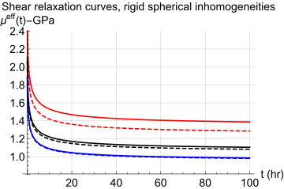
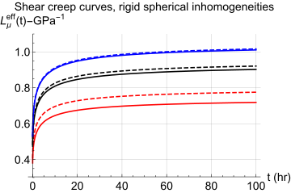
4.2 Spherical pores embedded in a non ageing linear viscoelastic matrix
NIA and Maxwell approximations schemes related to spherical pores embedded in an isotropic non ageing linear viscoelastic matrix write in Laplace Carson space
\[ \wideeq{{\tilde{L}}^{\text{NIA}}_{k} = \frac{1}{{\tilde{k}}^{\text{NIA}}} = \frac{\left(3 {\tilde{k}}_{0} + 4 {\tilde{\mu}}_{0}\right) {\varphi}_{i} + 4 {\tilde{\mu}}_{0}}{4 {\tilde{k}}_{0} {\tilde{\mu}}_{0}}} \tag{76}\]
\[ \wideeq{{\tilde{L}}^{\text{NIA}}_{\mu} = \frac{1}{{\tilde{\mu}}^{\text{NIA}} } = \frac{9 {\tilde{k}}_{0} + 8 {\tilde{\mu}}_{0} + 5 {\varphi}_{i} \left(3 {\tilde{k}}_{0} + 4 {\tilde{\mu}}_{0}\right)}{{\tilde{\mu}}_{0} \left(9 {\tilde{k}}_{0} + 8 {\tilde{\mu}}_{0}\right)}} \tag{77}\]
and
\[ \wideeq{{\tilde{L}}^{\text{MX}}_{k} = \frac{1}{{\tilde{k}}^{\text{MX}}} = \frac{3 {\varphi}_{i} {\tilde{k}}_{0} + 4 {\tilde{\mu}}_{0}}{4 \left(1 - {\varphi}_{i}\right) {\tilde{k}}_{0} {\tilde{\mu}}_{0}}} \tag{78}\]
\[ \wideeq{{\tilde{L}}^{\text{MX}}_{\mu} = \frac{1}{{\tilde{\mu}}^{\text{MX}} } = \frac{9 {\tilde{k}}_{0} + 8 {\tilde{\mu}}_{0} + 6 {\varphi}_{i} \left({\tilde{k}}_{0} + 2 {\tilde{\mu}}_{0}\right)} {\left(1 - {\varphi}_{i}\right) {\tilde{\mu}}_{0}\left(9 {\tilde{k}}_{0} + 8 {\tilde{\mu}}_{0}\right)}} \tag{79}\]
The procedure of decomposition into partial fractions allows to obtain exact solutions for bulk, shear relaxation and compliance kernels relative to these two schemes (see appendix Section 10 for detail). Comparisons between dilute and Maxwell schemes are presented in figure Fig. 3 for volume fractions \({\varphi}_{i} = 0.05, 0.10, 0.20\). The same comment than in previous case of stiff inhomogeneities can be done. Numerical and exact solutions perfectly coincide and effect of interactions may be similarly analyzed by comparing Maxwell scheme and NIA. Shear creep and relaxation curves presented in (Sevostianov et al., 2015) for PMMA viscoelastic material are recovered in the shear case with \({\varphi}_{i} = 0\).
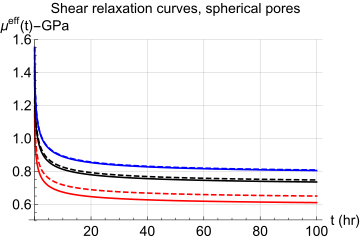
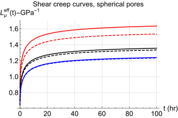
4.3 Randomly oriented spheroidal inhomogeneities embedded in a non ageing linear viscoelastic matrix
The case of randomly oriented spheroidal inhomogeneities embedded in a non ageing linear viscoelastic matrix is investigated in this section. Maxwell homogenization scheme is considered in the limiting cases of inhomogeneities of infinite stiffness, and of pores. Corresponding shear creep curves are presented in figure Fig. 4. Compared to fully analytical method presented in (Sevostianov et al., 2015; Sevostianov and Levin, 2015), the numerical method presented in this paper may be useful to evaluate effect of interactions. As an example comparisons between linearized Maxwell model with respect to the interaction parameter and non linearized Maxwell model may be easily done.
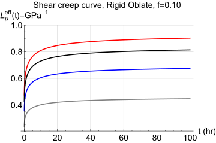
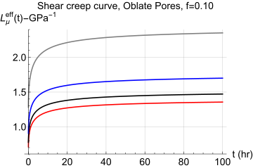
5 Application to ageing linear viscoelasticity
One considers here the ALV model defined by (Granger, 1995), and recently used by (Sanahuja, 2013) for application to concrete materials, constituted by ageing viscoelastic cement based matrix and embedded inhomogeneities. The creep compliance of matrix and inhomogeneity are defined with two Kelvin chains
\[ \wideeq{\Lquat = \left(\frac{1}{E} + f_a(t') \sum_{i=1}^{2}{s_i \left(1 - \mathrm{e}^{-(t-t')/\tau_i}\right)} \right) \bigg((1 - 2 \nu)\,\Jquat + (1 + \nu)\,\Kquat\bigg)} \tag{80}\]
with the ageing function \(f_a(t')\)
\[ \wideeq{f_a(t') = \mathrm{e}^{-(t'/\tau_{a})^2}} \tag{81}\]
| \(\nu\) | \(E\) | \(s_1\) | \(s_2\) | \(\tau_1\) | \(\tau_2\) | \(\tau_a\) | |
|---|---|---|---|---|---|---|---|
| matrix | 0.25 | 1 | 2 | 3 | 2 | 10 | 30 |
| inhomogeneity | 0.15 | 10 | 0.5 | 0.7 | 0.1 | 7 | 15 |
The present approach has been presented, in (Sanahuja, 2013) for the spherical inhomogeneity only. The present paper may be seen as a generalization to spheroidal shapes by using Eshelby solution to the ALV behaviour (Barthélémy et al., 2016). It allows to investigate the effect of (oblate or prolate) shape of inhomogeneities on ageing viscoelastic behaviour. Results are presented in figures Fig. 5- Fig. 6- Fig. 7- Fig. 8- Fig. 9- Fig. 10 for shear creep curves, and figures Fig. 11- Fig. 12 for shear relaxation curves.
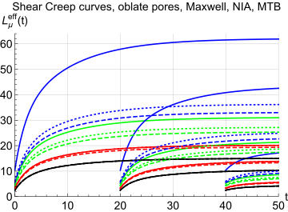
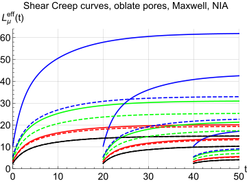
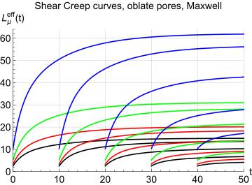
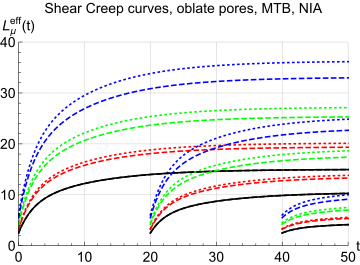
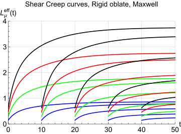
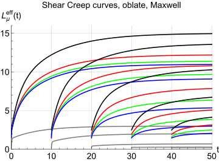
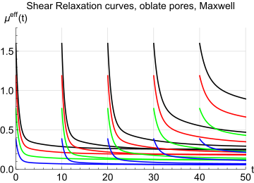
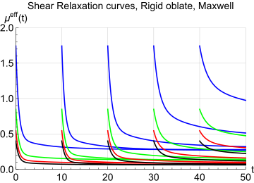
Simple limiting case of (dry) pores and rigid inhomogeneities are respectively presented in figures Fig. 5- Fig. 6- Fig. 7- Fig. 8- Fig. 11 and Fig. 9- Fig. 12. In the case of dry pores, it may be observed that influence of interactions between inhomogeneities on overall ALV properties is strongly dependent on the shape of pores. As in elasticity, these interactions are significant for low values of aspect ratio (\(\gamma = 0.1;0.05\)). A known elastic result in the case of a random orientation distribution of oblate spheroidal pores is also recovered in ALV: the Mori-Tanaka-Benveniste (MTB) scheme underestimates the effect of interaction compared to the Maxwell homogenization scheme (see figures Fig. 5). A comparison between NIA and MTB approximations is presented in figure Fig. 8. For the considered volume fraction \(\varphi=0.15\), the effects of interaction predicted by MTB are very low for the aspect ratios \(\gamma = 1.;0.1\) and moderate in the case \(\gamma = 0.05\). The influence of interactions between inhomogeneities on the overall properties is of major importance for low aspect ratio \(\gamma=0.05\), in the case of Maxwell approximation (see figures Fig. 5- Fig. 6- Fig. 8). We recall that Maxwell and Ponte-Castaneda-Willis (Ponte Castañeda and Willis, 1995) schemes (for one single spatial distribution shape) coincide, the later one being extensively considered to study effective elastic properties of cracked materials. The same result holds in the case of rigid inhomogeneities. The considered ageing viscoelastic data (table Table 2) corresponds to early age concrete: a solidification of the material may be observed on creep and relaxation curves. The effect of ageing is clearly shown whereas in the non-ageing case, relaxation and creep curves would simply translate with time.
6 Conclusions
Recent extension of the Eshelby solution to the ALV behaviour (Barthélémy et al., 2016) combined with an efficient numerical procedure to evaluate Volterra integral operators have been used in the present paper. Validation in non ageing linear viscoelasticity has been done by comparison with exact linear viscoelastic solutions obtained by using fraction exponential operators. Comparison with analytical solutions underlines the efficiency, in terms of time discretization, of the numerical procedure. The most important result of this approach is that it allows an immediate application of homogenization schemes used in elasticity and/or non ageing linear viscoelasticity. Explicit schemes such as dilute, Mori-Tanaka-Benveniste, NIA, Maxwell can be easily implemented. An open issue is still the extension of the approach to anisotropic ALV matrix.
7 Background results on tensor representation in the transversely isotropic framework
Barred letters \(\Aquat\), \(\vvvv{C}\), \(\vvvv{D}\), \(\vvvv{Q}\) refer to fourth-order tensors, bold letters \(\uu{\varepsilon}\), \(\uu{\sigma}\), \(\uu{i}\) refer to second-order tensors, underlined letters \(\underline{z}\), \(\underline{x}\) refer to first order tensors (i.e. vectors). \(\otimes\), \(:\) and \(::\) respectively represent tensor product, contracted products on two and four indices. \(\boldsymbol{i}\), \(\Iquat\), \(\Jquat\) and \(\Kquat\) respectively represent the second-order identity tensor, the fourth-order symmetric identity tensor, spherical and deviatoric tensors (\({\delta}_{ij}\) denotes Kronecker delta symbol, \({\delta}_{ij} = 1\) if \(i = j\), \({\delta}_{ij} = 0\) otherwise). Dyadic product (or tensorial product)
\[ \wideeq{\boldsymbol{a} \otimes \boldsymbol{b} = {a}_{ij}\,{b}_{kl}\,\underline{e}_{i} \otimes \underline{e}_{j}\otimes \underline{e}_{k} \otimes \underline{e}_{l}} \]
\[ \wideeq{\boldsymbol{a} \overline{\underline{\otimes}} \boldsymbol{b} = \frac{1}{2}\left({a}_{ik}\,{b}_{jl}+{a}_{il}\,{b}_{jk}\right)\,\underline{e}_{i} \otimes \underline{e}_{j}\otimes \underline{e}_{k} \otimes \underline{e}_{l}} \tag{82}\]
Isotropic fourth-order tensors
\[ \wideeq{\Iquat = \boldsymbol{i} \overline{\underline{\otimes}} \boldsymbol{i} , \quad I_{ijkl}\,=\,\frac{1}{2}\left(\delta_{ik}\,\delta_{jl}\,+\,\delta_{il}\,\delta_{jk}\right)} \tag{83}\]
\[ \wideeq{\Jquat = \frac{1}{3}\boldsymbol{i} \otimes \boldsymbol{i} , \quad {J}_{ijkl}\,=\frac{1}{3}\delta_{ij}\,\delta_{kl}} \tag{84}\]
\[ \wideeq{\Kquat = \Iquat - \Jquat} \tag{85}\]
Contracted products
\[ \wideeq{\boldsymbol{a} : \boldsymbol{b} = {a}_{ij}\,{b}_{ji}} \tag{86}\]
\[ \wideeq{\Aquat : \Bquat = {A}_{ijop}\,{B}_{pokl}\underline{e}_{i} \otimes \underline{e}_{j}\otimes \underline{e}_{k} \otimes \underline{e}_{l}} \]
\[ \wideeq{\Aquat :: \Bquat = {A}_{ijkl}\,{B}_{lkji}} \tag{87}\]
7.1 Fourth-order transversely isotropic tensors in Walpole basis
It may be interesting to introduce standard notation and the corresponding simplified algebra for fourth-order transversely isotropic tensor (see (Kunin, 1983; Walpole, 1984) and for recent application to micromechanics in (Dormieux et al., 2006; Levin and Alvarez-Tostado, 2006; Sevostianov et al., 2005; Sevostianov and Kachanov, 2007)). By denoting \(\underline{n}\) the unit vector of symmetry axis of the material, let us introduce the second-order tensors
\[ \wideeq{{\boldsymbol{i}}_{N} = \underline{n} \otimes \underline{n} = {n}_{i}\,{n}_{j}\,\underline{e}_{i} \otimes \underline{e}_{j} \quad , \quad {\boldsymbol{i}}_{T} = \boldsymbol{i} - {\boldsymbol{i}}_{N}} \tag{88}\]
In the particular case of \(\underline{n} = \underline{e}_{3}\), (Eq. 88) writes
\[ \wideeq{{\boldsymbol{i}}_{N} = \underline{e}_{3} \otimes \underline{e}_{3} \quad , \quad {\boldsymbol{i}}_{T} = \underline{e}_{1} \otimes \underline{e}_{1} + \underline{e}_{2} \otimes \underline{e}_{2}} \tag{89}\]
One introduces fourth-order tensors
\[ \wideeq{{\Equat}_{1} = {\boldsymbol{i}}_{N} \otimes {\boldsymbol{i}}_{N}\quad , \quad {\Equat}_{2} = \frac{1}{2} {\boldsymbol{i}}_{T} \otimes {\boldsymbol{i}}_{T}} \tag{90}\]
\[ \wideeq{{\Equat}_{3} = \frac{1}{\sqrt{2}} {\boldsymbol{i}}_{N} \otimes {\boldsymbol{i}}_{T} \quad , \quad {\Equat}_{4} = \frac{1}{\sqrt{2}} {\boldsymbol{i}}_{T} \otimes {\boldsymbol{i}}_{N}} \tag{91}\]
\[ \wideeq{{\Equat}_{5} = {\boldsymbol{i}}_{T} \overline{\underline{\otimes}} {\boldsymbol{i}}_{T} - \frac{1}{2} {\boldsymbol{i}}_{T} \otimes {\boldsymbol{i}}_{T} \quad , \quad {\Equat}_{6} = {\boldsymbol{i}}_{T} \overline{\underline{\otimes}} {\boldsymbol{i}}_{N} + {\boldsymbol{i}}_{N} \overline{\underline{\otimes}} {\boldsymbol{i}}_{T}} \tag{92}\]
where the product (Eq. 82) has been used.
It may be shown that any transversely isotropic fourth-order tensor can be decomposed as
\[ \wideeq{{\Lquat} = {\ell}_{1}\,{\Equat}_{1} + {\ell}_{2}\,{\Equat}_{2} + {\ell}_{3}\,{\Equat}_{3}+ {\ell}_{4}\,{\Equat}_{4}+ {\ell}_{5}\,{\Equat}_{5}+ {\ell}_{6}\,{\Equat}_{6}} \tag{93}\]
which can also be conveniently synthetized by a triplet composed of a \(2 \times 2\) matrix containing the four first parameters \(\ell_i\) (\(1\leq i \leq 4\)) and the two last parameters \(\ell_5\) and \(\ell_6\)
\[ \wideeq{\Lquat \equiv \left( L , {\ell}_{5} , {\ell}_{6} \right) , \quad L = \left( \begin{array}{cc} {\ell}_{1} & {\ell}_{3} \\ {\ell}_{4} & {\ell}_{2} \\ \end{array} \right)} \tag{94}\]
The advantage of such a notation relies in the simplicity of the calculations of products and inverses which boil down to mere \(2 \times 2\) matrix or scalar products and inverses
\[ \wideeq{\Lquat : \Mquat \equiv \left( L M , {\ell}_{5} m_5 , {\ell}_{6} m_6 \right)} \tag{95}\]
\[ \wideeq{{\Lquat}^{-1} \equiv \left( {L}^{-1} , \frac{1}{{\ell}_{5}} , \frac{1}{{\ell}_{6}} \right)} \tag{96}\]
The decompositions of the identity tensor \(\Iquat\) and the projectors \(\Jquat\) and \(\Kquat\) write whatever the orientation \(\v{n}\)
\[ \wideeq{\Iquat \equiv \left( \left( \begin{array}{cc} 1 & 0 \\ 0 & 1 \\ \end{array} \right) , 1 , 1\right)} \tag{97}\]
\[ \wideeq{\Jquat \equiv \left( \left( \begin{array}{cc} \frac{1}{3} & \frac{\sqrt{2}}{3} \\ \frac{\sqrt{2}}{3} & \frac{2}{3} \\ \end{array} \right) , 0 , 0 \right) \quad;\quad \Kquat \equiv \left( \left( \begin{array}{cc} \frac{2}{3} & - \frac{\sqrt{2}}{3} \\ - \frac{\sqrt{2}}{3} & \frac{1}{3} \\ \end{array} \right) , 1 , 1 \right)} \tag{98}\]
7.2 Isotropisation of a fourth-order transversely isotropic tensor
Following (Bornert et al., 2001), the isotropisation of a fourth order tensor respecting minor symmetries may be defined as
\[ \wideeq{\overline{\Aquat} = a^J \Jquat + a^K \Kquat = \left(\Jquat :: \Aquat \right) \Jquat + \frac{1}{5} \left(\Kquat :: \Aquat \right) \Kquat} \tag{99}\]
\[ \wideeq{a^J = \frac{{A}_{iijj}}{3} , \quad a^K = \frac{1}{5} \left({A}_{ijij} - \frac{{A}_{iijj}}{3}\right)} \tag{100}\]
The new isotropic tensor defined in Eq. 99100 actually corresponds to the average tensor obtained by rotation of \(\Aquat\) over all the possible orientations of the 3D space. Indeed introducing the rotation tensor \(\uu{R}\) defined by the 3 angles \(\theta,\phi,\psi\) such that its matrix in the canonical basis writes
\[ \wideeq{\mathrm{Mat}(\uu{R})= \left( \begin{array}{c|c|c} \cos \theta \cos \phi \cos \psi -\sin \phi \sin \psi &-\cos \theta \cos \phi \sin \psi -\sin \phi \cos \psi &\sin \theta \cos \phi \\\noalign{\medskip} \cos \theta \sin \phi \cos \psi +\cos \phi \sin \psi &-\cos \theta \sin \phi \sin \psi +\cos \phi \cos \psi &\sin \theta \sin \phi \\\noalign{\medskip}- \sin \theta \cos \psi &\sin \theta \sin \psi &\cos \theta \end{array} \right)} \tag{101}\]
this average is given by
\[ \wideeq{\overline{\Aquat} = \frac{1}{8\pi^2}\int_{{0 \leq \theta \leq \pi \atop 0 \leq \phi \leq 2\pi} \atop 0 \leq \psi \leq 2\pi} (\uu{R} \,\overline{\underline{\otimes}}\, \uu{R}) : \Aquat : ({}^t\uu{R} \,\overline{\underline{\otimes}}\, {}^t\uu{R}) \sin\theta\, \ud\theta\,\ud\phi\,\ud\psi} \tag{102}\]
which boils down to Eq. 99100.
In the case of a tensor written in a transversely isotropic basis \(\Aquat = {a}_{i} {\Equat}_{i}\), the isotropisation yields
\[ \wideeq{\overline{\Aquat} = a^J \Jquat + a^K \Kquat = a_i \left(\left(\Jquat :: {\Equat}_{i} \right) \Jquat + \frac{1}{5} \left(\Kquat :: {\Equat}_{i} \right) \Kquat\right)} \tag{103}\]
with
\[ \wideeq{a^J = \frac{1}{3}\left({a}_{1} + 2 {a}_{2} + \sqrt{2} \left({a}_{3} + {a}_{4}\right)\right)} \tag{104}\]
\[ \wideeq{a^K = \frac{1}{15}\left(2 {a}_{1} + {a}_{2} - \sqrt{2} \left({a}_{3} + {a}_{4}\right) + 6 \left({a}_{5} + {a}_{6}\right)\right)} \tag{105}\]
Due to the particular transversely isotropic symmetry of the initial tensor here, the average Eq. 102 can be written by means of a rotation of the orientation \(\v{n}\) over the unit sphere, being recalled that the tensors \({\Equat}_{i}\) depend on \(\v{n}\) Eq. 90, Eq. 91, Eq. 92
\[ \wideeq{\overline{\Aquat}=\frac{1}{4\pi}\int_{\norm{\v{n}}=1} {a}_{i}\,{\Equat}_{i} \ud S_{\v{n}}} \tag{106}\]
7.3 Components of \(\Uquat^{\mathcal{E}}\) and \(\Vquat^{\mathcal{E}}\) tensors in transversely isotropic basis
The components \({u}^{\mathcal{E}}_{j}\) and \({v}^{\mathcal{E}}_{j}\) of respectively \(\Uquat^{\mathcal{E}}\) and \(\Vquat^{\mathcal{E}}\) in the Walpole basis \(\Equat_{j}\) (\(j = 1\ldots 6\)) defined in Section 7.1 where \(\v{n}\) is the symmetry axis of the spheroid write as functions of the spheroid aspect ratio \(\gamma = c/a\)
\[ \wideeq{{u}^{\mathcal{E}}_{1} = \frac{1 - 3\,f(\gamma)}{1-{\gamma}^{2}} \quad , \quad {v}^{\mathcal{E}}_{1} = 1 - 2 f(\gamma)} \]
\[ \wideeq{{u}^{\mathcal{E}}_{2} = \frac{f(\gamma) \left(1 - 4 {\gamma}^{2}\right)+{\gamma}^{2}}{2 (1-{\gamma}^{2})} \quad , \quad {v}^{\mathcal{E}}_{2} = f(\gamma)} \]
\[ \wideeq{{u}^{\mathcal{E}}_{3} = {u}^{\mathcal{E}}_{4} = \frac{f(\gamma) \left(1 + 2 {\gamma}^{2}\right)- {\gamma}^{2}}{\sqrt{2} (1-{\gamma}^{2})} \quad , \quad {v}^{\mathcal{E}}_{3} = {v}^{\mathcal{E}}_{4} = 0} \]
\[ \wideeq{{u}^{\mathcal{E}}_{5} = \frac{f(\gamma) \left(1 - 4 {\gamma}^{2}\right)+{\gamma}^{2} }{4 (1-{\gamma}^{2})} \quad , \quad {v}^{\mathcal{E}}_{5} = f(\gamma)} \]
\[ \wideeq{{u}^{\mathcal{E}}_{6} = \frac{f(\gamma) \left(1 + 2 {\gamma}^{2}\right)- {\gamma}^{2}}{1-{\gamma}^{2}} \quad , \quad {v}^{\mathcal{E}}_{6} =\frac{1- f(\gamma)}{2}} \]
As in (Mura, 1987; Sevostianov et al., 2014) we define a shape factor \(f(\gamma)\) which only depends on aspect ratio \(\gamma\) (see corresponding functions in (Mura, 1987), relations \(11.28\) and \(11.29\) p. \(84\), with coefficient \(1/(4 \pi)\))
\[ \wideeq{f(\gamma) = \left\{ \begin{array}{lc} \frac{\gamma}{2\,{\left({1 - \gamma}^{2}\right)}^{3/2}} \left(\arccos(\gamma) - \gamma \sqrt{1 - {\gamma}^{2}}\right) & \text{if } \gamma < 1 \textrm{ (oblate)}\\ \frac{1}{3} & \text{if } \gamma = 1 \textrm{ (sphere)} \\ \frac{\gamma}{2\,{\left({\gamma}^{2} - 1\right)}^{3/2}} \left(\gamma \sqrt{{\gamma}^{2} - 1} - \arccosh(\gamma)\right) & \text{if } \gamma > 1 \textrm{ (prolate)} \\ \end{array} \right.} \]
In the spherical case, the shape factor \(f(1)=1/3\) leads to undetermined values of the components \({u}^{\mathcal{E}}_{j}\) which can however be obtained by taking the limit of the prolate or oblate cases when \(\gamma\) tends towards \(1\). But \(\Uquat^{\mathcal{E}}\) and \(\Vquat^{\mathcal{E}}\) can also more simply be written (Barthélémy et al., 2016)
\[ \wideeq{\Uquat^{\textrm{sph}}=\frac{1}{3}\Jquat+\frac{2}{15}\Kquat \quad\textrm{and}\quad \Vquat^{\textrm{sph}}=\frac{1}{3}\Iquat} \tag{107}\]
which may eventually be decomposed in any Walpole basis thanks to Eq. 98.
7.4 Volterra fourth order tensor integral operators in transversely isotropic basis
The decompositions Eq. 93 and Eq. 94 can easily be extended to a tensor Volterra kernel for which the six parameters are scalar Volterra kernels and not simple scalar numbers. It follows that the double contraction in the sense of Volterra Eq. 5 between two transversely isotropic kernels written in the same basis gives in the condensed notation
\[ \wideeq{\Lquat \tvolt \Mquat \equiv \left( L \volt M , {\ell}_{5}\volt m_5 , {\ell}_{6}\volt m_6 \right)} \tag{108}\]
with
\[ \wideeq{L \volt M = \left( \begin{array}{cc} {\ell}_{1} \volt m_{1} + {\ell}_{3} \volt m_{4} & {\ell}_{1} \volt m_{3} + {\ell}_{3} \volt m_{2}\\ {\ell}_{4} \volt m_{1} + {\ell}_{2} \volt m_{4} & {\ell}_{4} \volt m_{3} + {\ell}_{2} \volt m_{2} \\ \end{array} \right)} \tag{109}\]
Consequently, paying attention to the non-commutativity of the scalar kernels, the inverse in the sense of Volterra of a transversely isotropic kernel \(\Lquat\equiv(L,\ell_5,\ell_6)\) is obtained by invoking the Volterra inverse of scalars and \(2 \times 2\) matrix
\[ \wideeq{\invvolt{\Lquat} \equiv \left( \invvolt{L} , \invvolt{\ell_{5}} , \invvolt{\ell_{6}} \right)} \tag{110}\]
in which
\[ \wideeq{\invvolt{L} =\left( \begin{array}{cc} \invvolt{(\ell_1-\ell_3\volt\invvolt{\ell_2}\volt\ell_4)} & \invvolt{\ell_1}\volt\ell_3\volt \invvolt{(\ell_4\volt\invvolt{\ell_1}\volt\ell_3-\ell_2)}\\ \invvolt{\ell_2}\volt\ell_4\volt \invvolt{(\ell_3\volt\invvolt{\ell_2}\volt\ell_4-\ell_1)} & \invvolt{(\ell_2-\ell_4\volt\invvolt{\ell_1}\volt\ell_3)}\\ \end{array} \right)} \tag{111}\]
8 Numerical method for the evaluation of the Volterra integral operator and its inverse
We use the algorithm proposed in (Baz̆ant, 1972) to invert numerically the Volterra integral operator as defined in Eq. 2 and we closely follow the presentation of (Sanahuja, 2013). It has also been recently used in the context of ageing linear viscoelasticity by (Barthélémy et al., 2016; Lavergne et al., 2016) with an extension to the tensor framework. This approach, successfully used in (Sanahuja, 2013) for the problem on a spherical inhomogeneity, is briefly recalled here for scalar functions. Considering that the value of all the involved functions of a single time variable is zero before \(t_0\) and that the time interval of interest is \([t_0,t_n]\), a time sampling \(t_0 \leq t_1 \leq \ldots \leq t_n\) is introduced and the time integral appearing in the Volterra operator (Eq. 2) is discretized using the trapezoidal rule
\[ \wideeq{\begin{aligned} Y_i&=\sum_{j=0}^i \frac{F(t_i,t_j)+F(t_i,t_{j-1})}{2}(X_j-X_{j-1}) \quad(\forall\,0\leq i\leq n)\\ &=\frac{F(t_i,t_i)+F(t_i,t_{i-1})}{2} X_i +\sum_{j=0}^{i-1}\frac{F(t_i,t_{j-1})-F(t_i,t_{j+1})}{2} X_j \end{aligned}} \tag{112}\]
in which the conventions \(t_{-1}=t_0\), \(X_i=X(t_i)\), \(Y_i=Y(t_i)\) for \(0\leq i \leq n\) and \(X_{-1}=0\) have been adopted.
Thus, it follows that the function of two different times \(F(t,t')\) playing the role of a Volterra kernel in (Eq. 2) is now transformed into a lower triangular matrix \([F]\) of rank \(n+1\) relating the vector \([Y]=[Y_0,\ldots,Y_n]\) to \([X]=[X_0,\ldots,X_n]\)
\[ \wideeq{[Y]=[F] [X] \quad\textrm{with}\quad F_{ij}= \left\{ \begin{array}{ll} 0 & \textrm{if}\; j>i\\ \Big(F(t_i,t_i)+F(t_i,t_{i-1})\Big)/2 & \textrm{if}\;j=i\\ \Big(F(t_i,t_{j-1})-F(t_i,t_{j+1})\Big)/2 & \textrm{if}\;j<i \end{array} \right.} \tag{113}\]
still with the convention \(t_{-1}=t_0\).
Practical implementation of the results derived in this paper is straightforward and only requires
- to time-discretize relaxation functions into matrices using (Eq. 113),
- to implement expressions of the Hill and concentration tensors, replacing the Volterra operator and its inverse by matrix multiplication and inversion, using any software package implementing numerical matrix algebra.
9 Background related to fraction-exponential operators, Mittag-Leffler and Rabotnov functions
Reader may refer to previously cited papers (Levin et al., 2012; Sevostianov et al., 2016, 2015; Sevostianov and Levin, 2015) for details on fraction-exponential operators and their application to homogenization of linear non ageing viscoelastic properties.
Mittag-Leffler function with one parameter (see (Mainardi, 2010) relation \(E.1\) p. 211, and (Gorenflo, 1997; Podlubny, 1999)) is defined as
\[ \wideeq{{E}_{\alpha}(z) = \sum_{n=0}^{\infty}\frac{{z}^{n}}{\Gamma\left(\alpha n + 1\right)} , \quad \alpha > 0 , \quad z \in \Cquat} \tag{114}\]
Mittag-Leffler function of two parameters writes (see (Mainardi, 2010) relation \(E.22\) p. 217)
\[ \wideeq{{E}_{\alpha,\beta}(z) = \sum_{n=0}^{\infty}\frac{{z}^{n}}{\Gamma \left(\alpha n + \beta\right)} , \quad \mathcal{R}e\, \alpha > 0 , \quad \beta \in \Cquat , \quad z \in \Cquat} \tag{115}\]
so that
\[ \wideeq{{E}_{\alpha}(z) = {E}_{\alpha,1}(z)} \tag{116}\]
Rabotnov function (see (Rabotnov, 1977, 1948)) writes
\[ \wideeq{{\ni}_{\alpha}(\beta , t) = {t}^{\alpha} \sum_{n=0}^{\infty} \frac{\left(-\beta\,t^{\alpha+1}\right)^n} {\Gamma\left[(n + 1) (\alpha + 1)\right]} , \quad -1 < \alpha < 0 , \quad \beta > 0 , \quad t \ge 0} \tag{117}\]
and is related to Mittag-Leffler function of two parameters
\[ \wideeq{{\ni}_{\alpha}(\beta , t) = {t}^{\alpha} {E}_{\alpha+1,\alpha+1} \left(- \beta {t}^{\alpha+1}\right)} \tag{118}\]
For further interest, it proves useful to introduce the primitive of Rabotnov function ((Levin et al., 2012; Sevostianov et al., 2015))
\[ \wideeq{{I}^{\ni}_{\alpha}(\beta , t) = \int_{0}^{t}{{\ni}_{\alpha}(\beta , u) \ud u} = \frac{1}{\beta} \left(1 - {E}_{\alpha+1}\left(- \beta {t}^{\alpha+1}\right)\right)} \tag{119}\]
so that Laplace transform of \({\ni}_{\alpha}(\beta,t)\) coincides with Laplace-Carson transform of \({I}^{\ni}_{\alpha}(\beta , t)\) (see Eq. 7) which writes
\[ \wideeq{\mathcal{L}\left[{\ni}_{\alpha}(\beta , t),p\right] = \tilde{I}^{\ni}_{\alpha}(\beta ,p)= \frac{1}{x + \beta} \textrm{ with } x = {p}^{1+\alpha} \quad(-1 < \alpha < 0)} \tag{120}\]
Such a result Eq. 120 allows a straightforward identification of the time kernel for which the Laplace-Carson transform writes as a sum of rational fraction with simple poles in \(x={p}^{1+\alpha}\). For example, the shear relaxation of the material considered in section (Section 4) obeys the following relationships
\[ \wideeq{\tilde{\mu}(p)=\mu^0\left(1+\frac{\lambda}{p^{1+\alpha}+\beta}\right) \Leftrightarrow \mu(t)=\mu^0\left(1+\lambda {I}^{\ni}_{\alpha}(\beta , t) \right)} \tag{121}\]
with \(\mu^0>0\) ,\(-1 < \alpha< 0\), \(\lambda<0\) and \(\beta>0\). The initial and final value theorems applied to Eq. 121 yield
\[ \wideeq{\lim_{p\to \infty}\tilde{\mu}(p)=\lim_{t\to 0}\mu(t)= \mu^0 \quad\textrm{and}\quad \lim_{p\to 0}\tilde{\mu}(p)=\lim_{t\to \infty}\mu(t)= \mu^0\left(1+\frac{\lambda}{\beta}\right)=\mu^\infty} \tag{122}\]
and \(\beta\) parameter can be expressed in terms of relaxation time in power \(1+ \alpha\)
\[ \wideeq{\beta = \frac{1}{{\tau}^{\alpha+1}}} \tag{123}\]
The shear creep compliance \(L^\mu\) associated to \(\mu\) in Eq. 121 is readily obtained from inversion of the Laplace-Carson transform of \(\tilde{\mu}\) and further identification of the simple pole decomposition
\[ \wideeq{\tilde{L}^\mu(p)= \frac{1}{\tilde{\mu}(p)}=\frac{1}{\mu^0} \left(1-\frac{\lambda}{p^{1+\alpha}+\beta+\lambda}\right) \Leftrightarrow L^\mu(t)=\frac{1}{\mu^0} \left(1-\lambda {I}^{\ni}_{\alpha}(\beta+\lambda , t) \right)} \tag{124}\]
10 Fraction exponential solutions: detailed expressions of coefficients
10.1 Dilute and Maxwell approximations for rigid spheres embedded in isotropic viscoelastic matrix
Coefficients for bulk relaxation kernel relative to dilute homogenization scheme:
\[ \wideeq{{\tilde{k}}^{\text{DIL}} = {k}^{d}_{0} \left(1 + \frac{{a}^{k}_{0}}{x + {\beta}_{0}}\right)} \tag{125}\]
\[ \wideeq{{k}^{d}_{0} = {k}_{0} + {\varphi}_{i} \left({k}_{0} + \frac{4}{3}{\mu}_{0}\right), \quad {a}^{k}_{0} = \frac{4 {\varphi}_{i} {\lambda}_{0} {\mu}_{0}}{3 {k}^{d}_{0} }} \tag{126}\]
Coefficients for shear relaxation kernel relative to dilute scheme:
\[ \wideeq{{\tilde{\mu}}^{\text{DIL}} = {\mu}^{d}_{0} \left(1 + \frac{{a}^{\mu}_{0}}{x + {\beta}_{0}} + \frac{{a}^{\mu}_{1}}{x + {\beta}_{1}}\right)} \tag{127}\]
with
\[ \wideeq{{\mu}^{d}_{0} = {\mu}_{0} \left(1 + \frac{5 {\varphi}_{i}}{6}\,\frac{3 {k}_{0} + 4 {\mu}_{0}}{ {k}_{0} + 2 {\mu}_{0}}\right)} \tag{128}\]
\[ \wideeq{{a}^{\mu}_{0} = \frac{{\lambda}_{0} {\mu}_{0} \left(3 + 5 {\varphi}_{i}\right)} {3 {\mu}^{d}_{0}} , \quad {a}^{\mu}_{1} = \frac{5 {\varphi}_{i}}{2 \left(3 + 5 {\varphi}_{i}\right)} {\left(\frac{{k}_{0}}{{k}_{0} + 2 {\mu}_{0}}\right)}^{2} {a}^{\mu}_{0}} \tag{129}\]
\[ \wideeq{{\beta}_{1} = {\beta}_{0} + \frac{2 {\lambda}_{0} {\mu}_{0}}{{k}_{0} + 2 {\mu}_{0}}} \tag{130}\]
Coefficients for dilute bulk creep compliance:
\[ \wideeq{{\tilde{L}}^{\text{DIL}}_{k} = \frac{1}{{k}^{d}_{0}} \left(1 - \frac{{a}^{k}_{0}}{x + {\beta}_{0} + {a}^{k}_{0}}\right)} \tag{131}\]
Coefficients for dilute shear creep compliance:
\[ \wideeq{{\tilde{L}}^{\text{DIL}}_{\mu} = \frac{1}{{\mu}^{d}_{0}} \left(1 + \frac{{a}^{\mu}_{3}}{x + {\beta}_{3}} + \frac{{a}^{\mu}_{4}}{x + {\beta}_{4}}\right)} \tag{132}\]
with
\[ \wideeq{1 + \frac{{a}^{\mu}_{3}}{x + {\beta}_{3}} + \frac{{a}^{\mu}_{4}}{x + {\beta}_{4}}=\frac{1}{1 + \frac{{a}^{\mu}_{0}}{x + {\beta}_{0}} + \frac{{a}^{\mu}_{1}}{x + {\beta}_{1}}}} \tag{133}\]
Method of derivation of fraction exponential constants such as \({a}^{\mu}_{3}\), \({a}^{\mu}_{4}\), \({\beta}_{3}\), \({\beta}_{4}\) from given \({a}^{\mu}_{0}\), \({a}^{\mu}_{1}\), \({\beta}_{0}\), \({\beta}_{1}\) is presented in (Levin and Sevostianov, 2005; Sevostianov et al., 2016, 2015; Sevostianov and Levin, 2015). Use of formal calculation code such as Mathematica enables such calculations, in much more complicated cases, by using tools related to partial fractions. First one determines \({\beta}_{3}\), \({\beta}_{4}\), opposites of the roots of second degree equation
\[ \wideeq{{x}^{2} + \left({\beta}_{0} + {a}^{\mu}_{0} + {\beta}_{1} + {a}^{\mu}_{1} \right) x + {a}^{\mu}_{0} {\beta}_{1} + {a}^{\mu}_{1} {\beta}_{0} + {\beta}_{0} {\beta}_{1} = 0} \tag{134}\]
verifying
\[ \wideeq{\frac{\left(x + {\beta}_{0}\right)\left(x + {\beta}_{1}\right)}{\left(x + {\beta}_{3}\right)\left(x + {\beta}_{4}\right)} = \frac{1}{1 + \frac{{a}^{\mu}_{0}}{x + {\beta}_{0}} + \frac{{a}^{\mu}_{1}}{x + {\beta}_{1}}}} \tag{135}\]
and second one deduces constants \({a}^{\mu}_{3}\), \({a}^{\mu}_{4}\)
\[ \wideeq{{a}^{\mu}_{3} = \frac{\left({\beta}_{0} - {\beta}_{3}\right)\left({\beta}_{3} - {\beta}_{1}\right)}{{\beta}_{3} - {\beta}_{4}} , \quad {a}^{\mu}_{4} = \frac{\left({\beta}_{0} - {\beta}_{4}\right)\left({\beta}_{4} - {\beta}_{1}\right)}{{\beta}_{4} - {\beta}_{3}}} \tag{136}\]
Coefficients for bulk and shear relaxation kernels relative to Maxwell homogenization scheme write
\[ \wideeq{{k}^{\text{MX}}_{0} = {\mu}_{0} \frac{3 {k}_{0} + 4 {\varphi}_{i} {\mu}_{0}}{3 \left(1 - {\varphi}_{i}\right)}, \quad {b}^{k}_{0} = \frac{4 {\varphi}_{i} {\lambda}_{0} {\mu}_{0}}{3 {k}_{0} + 4 {\varphi}_{i} {\mu}_{0}}} \tag{137}\]
\[ \wideeq{{\tilde{k}}^{\text{MX}} = {k}^{\text{MX}}_{0} \left(1 + \frac{{b}^{k}_{0}}{x + {\beta}_{0}}\right)} \tag{138}\]
\[ \wideeq{{\mu}^{\text{MX}}_{0} = {\mu}_{0} \frac{6 \left({k}_{0} + 2 {\mu}_{0}\right) + {\varphi}_{i} \left(9 {k}_{0} + 8 {\mu}_{0}\right) }{6 \left(1 - {\varphi}_{i}\right) \left({k}_{0} + 2 {\mu}_{0}\right)}} \tag{139}\]
\[ \wideeq{{\tilde{\mu}}^{\text{MX}} = {\mu}^{\text{MX}}_{0} \left(1 + \frac{{b}^{\mu}_{0}}{x + {\beta}_{0}} + \frac{{b}^{\mu}_{1}}{x + {\beta}_{1}}\right)} \tag{140}\]
\[ \wideeq{{b}^{\mu}_{0} = \frac{2 \left({k}_{0} + 2 {\mu}_{0}\right) \left(3 + 2 {\varphi}_{i}\right) {\lambda}_{0} }{6 \left({k}_{0} + 2 {\mu}_{0}\right) + {\varphi}_{i} \left(9 {k}_{0} + 8 {\mu}_{0}\right) }} \tag{141}\]
\[ \wideeq{{b}^{\mu}_{1} = \frac{5 {\varphi}_{i} {k}_{0}^{2} {\lambda}_{0} }{\left(6 \left({k}_{0} + 2 {\mu}_{0}\right) + {\varphi}_{i} \left(9 {k}_{0} + 8 {\mu}_{0}\right) \right) \left({k}_{0} + 2 {\mu}_{0}\right)}} \tag{142}\]
Bulk and shear creep compliance kernel predicted by Maxwell scheme write
\[ \wideeq{{\tilde{L}}^{\text{MX}}_{k} = \frac{1}{{k}^{\text{MX}}_{0}} \left(1 - \frac{{b}^{k}_{0}}{x + {\beta}_{0} + {b}^{k}_{0}}\right)} \tag{143}\]
\[ \wideeq{{\tilde{L}}^{\text{MX}}_{\mu} = \frac{1}{{\mu}^{\text{MX}}_{0}} \left(1 + \frac{{b}^{\mu}_{3}}{x + {\delta}_{3}} + \frac{{b}^{\mu}_{4}}{x + {\delta}_{4}}\right)} \tag{144}\]
with \({\delta}_{3}\), \({\delta}_{4}\) are opposites of the roots of second degree equation
\[ \wideeq{{x}^{2} + \left({\beta}_{0} + {b}^{\mu}_{0} + {\beta}_{1} + {b}^{\mu}_{1} \right) x + {b}^{\mu}_{0} {\beta}_{1} + {b}^{\mu}_{1} {\beta}_{0} + {\beta}_{0} {\beta}_{1} = 0} \tag{145}\]
verifying
\[ \wideeq{\frac{\left(x + {\beta}_{0}\right)\left(x + {\beta}_{1}\right)}{\left(x + {\delta}_{3}\right)\left(x + {\delta}_{4}\right)} = \frac{1}{1 + \frac{{b}^{\mu}_{0}}{x + {\beta}_{0}} + \frac{{b}^{\mu}_{1}}{x + {\beta}_{1}}}} \tag{146}\]
\[ \wideeq{{b}^{\mu}_{3} = \frac{\left({\beta}_{0} - {\delta}_{3}\right)\left({\delta}_{3} - {\beta}_{1}\right)}{{\delta}_{3} - {\delta}_{4}} , \quad {b}^{\mu}_{4} = \frac{\left({\beta}_{0} - {\delta}_{4}\right)\left({\delta}_{4} - {\beta}_{1}\right)}{{\delta}_{4} - {\delta}_{3}}} \tag{147}\]
10.2 NIA and Maxwell approximations for spherical pores embedded in isotropic viscoelastic matrix
Maxwell homogenization scheme: bulk compliance kernel writes
\[ \wideeq{{\tilde{L}}^{\text{MX}}_{k} = \frac{1}{{k}^{MX}_{0}} \left(1 + \frac{{d}^{k}_{0}}{x + {\beta}_{0} + {\lambda}_{0}}\right) , \quad {d}^{k}_{0} = - \frac{3 {\varphi}_{i} {k}_{0} {\lambda}_{0}}{3 {\varphi}_{i} {k}_{0} + 4 {\mu}_{0}}} \tag{148}\]
\[ \wideeq{{k}^{MX}_{0} = \frac{4 \left(1 - {\varphi}_{i}\right) {k}_{0} {\mu}_{0}}{3 {\varphi}_{i} {k}_{0} + 4 {\mu}_{0}}} \tag{149}\]
Bulk relaxation kernel writes
\[ \wideeq{{\tilde{k}}^{\text{MX}} = {k}^{MX}_{0} \left(1 - \frac{{d}^{k}_{0}}{x + {\beta}_{0} + {\lambda}_{0} + {d}^{k}_{0}}\right)} \tag{150}\]
Relations for shear compliance and shear relaxation kernels write
\[ \wideeq{{\tilde{L}}^{\text{MX}}_{\mu} = \frac{1}{{\mu}^{MX}_{0}} \left(1 + \frac{{d}^{\mu}_{0}}{x + {\beta}_{0} + {\lambda}_{0}} + \frac{{d}^{\mu}_{1}}{x + {\beta}_{0} + \frac{8 {\mu}_{0} {\lambda}_{0}}{9 {k}_{0} + 8 {\mu}_{0}}}\right)} \tag{151}\]
\[ \wideeq{{\tilde{\mu}}^{\text{MX}} = {\mu}^{\text{MX}}_{0} \left(1 + \frac{{d}^{\mu}_{3}}{x + {\eta}_{3}} + \frac{{d}^{\mu}_{4}}{x + {\eta}_{4}}\right)} \tag{152}\]
with
\[ \wideeq{{\mu}^{\text{MX}}_{0} = \frac{\left(1 - {\varphi}_{i}\right) {\mu}_{0}\left(9 {k}_{0} + 8 {\mu}_{0}\right)}{9 {k}_{0} + 8 {\mu}_{0} + 6 {\varphi}_{i} \left({k}_{0} + 2 {\mu}_{0}\right)}} \tag{153}\]
\[ \wideeq{{d}^{\mu}_{0} = - \frac{\left(3 + 2 {\varphi}_{i}\right) \left(9 {k}_{0} + 8 {\mu}_{0}\right) {\lambda}_{0}}{3 \left(9 {k}_{0} + 8 {\mu}_{0} + 6 {\varphi}_{i} \left({k}_{0} + 2 {\mu}_{0}\right)\right)}} \tag{154}\]
\[ \wideeq{{d}^{\mu}_{1} = - \frac{160 {\varphi}_{i} {\mu}_{0}^{2} {\lambda}_{0}}{3 \left(9 {k}_{0} + 8 {\mu}_{0}\right) \left(9 {k}_{0} + 8 {\mu}_{0} + 6 {\varphi}_{i} \left({k}_{0} + 2 {\mu}_{0}\right)\right)}} \tag{155}\]
It may be convenient, for calculation of shear relaxation kernel to pose
\[ \wideeq{{\eta}_{0} = {\beta}_{0} + {\lambda}_{0} , \quad {\eta}_{1} = {\beta}_{0} + \frac{8 {\mu}_{0} {\lambda}_{0}}{9 {k}_{0} + 8 {\mu}_{0}}} \tag{156}\]
and then
\[ \wideeq{{\tilde{L}}^{\text{MX}}_{\mu} = \frac{1}{{\mu}^{MX}_{0}} \left(1 + \frac{{d}^{\mu}_{0}}{x + {\eta}_{0}} + \frac{{d}^{\mu}_{1}}{x + {\eta}_{1}}\right)} \tag{157}\]
\({\eta}_{3}\), \({\eta}_{4}\) are opposites of the roots of second degree equation
\[ \wideeq{{x}^{2} + \left({\eta}_{0} + {d}^{\mu}_{0} + {\eta}_{1} + {d}^{\mu}_{1} \right) x + {d}^{\mu}_{0} {\eta}_{1} + {d}^{\mu}_{1} {\eta}_{0} + {\eta}_{0} {\eta}_{1} = 0} \tag{158}\]
verifying
\[ \wideeq{\frac{\left(x + {\eta}_{0}\right)\left(x + {\eta}_{1}\right)}{\left(x + {\eta}_{3}\right)\left(x + {\eta}_{4}\right)} = \frac{1}{1 + \frac{{d}^{\mu}_{3}}{x + {\eta}_{3}} + \frac{{d}^{\mu}_{4}}{x + {\eta}_{4}}}} \tag{159}\]
with
\[ \wideeq{{d}^{\mu}_{3} = \frac{\left({\eta}_{0} - {\eta}_{3}\right)\left({\eta}_{3} - {\eta}_{1}\right)}{{\eta}_{3} - {\eta}_{4}} , \quad {d}^{\mu}_{4} = \frac{\left({\eta}_{0} - {\eta}_{4}\right)\left({\eta}_{4} - {\eta}_{1}\right)}{{\eta}_{4} - {\eta}_{3}}} \tag{160}\]
NIA: bulk compliance kernel writes
\[ \wideeq{{\tilde{L}}^{\text{NIA}}_{k} = \frac{1}{{k}^{NIA}_{0}} \left(1 + \frac{{c}^{k}_{0}}{x + {\beta}_{0} + {\lambda}_{0}}\right) , \quad {c}^{k}_{0} = - \frac{3 {\varphi}_{i} {k}_{0} {\lambda}_{0}}{{\varphi}_{i} \left(3 {k}_{0} + 4 {\mu}_{0}\right) + 4 {\mu}_{0}}} \tag{161}\]
\[ \wideeq{{k}^{NIA}_{0} = \frac{4 {k}_{0} {\mu}_{0}}{{\varphi}_{i} \left(3 {k}_{0} + 4 {\mu}_{0}\right) + 4 {\mu}_{0}}} \tag{162}\]
Bulk relaxation kernel writes
\[ \wideeq{{\tilde{k}}^{\text{NIA}} = {k}^{NIA}_{0} \left(1 - \frac{{c}^{k}_{0}}{x + {\beta}_{0} + {\lambda}_{0} + {c}^{k}_{0}}\right)} \tag{163}\]
Relations for shear compliance and shear relaxation kernels write
\[ \wideeq{{\tilde{L}}^{\text{NIA}}_{\mu} = \frac{1}{{\mu}^{NIA}_{0}} \left(1 + \frac{{c}^{\mu}_{0}}{x + {\beta}_{0} + {\lambda}_{0}} + \frac{{c}^{\mu}_{1}}{x + {\beta}_{0} + \frac{8 {\mu}_{0} {\lambda}_{0}}{9 {k}_{0} + 8 {\mu}_{0}}}\right)} \tag{164}\]
\[ \wideeq{{\tilde{\mu}}^{\text{NIA}} = {\mu}^{\text{NIA}}_{0} \left(1 + \frac{{c}^{\mu}_{3}}{x + {\zeta}_{3}} + \frac{{c}^{\mu}_{4}}{x + {\zeta}_{4}}\right)} \tag{165}\]
with
\[ \wideeq{{\mu}^{\text{NIA}}_{0} = \frac{{\mu}_{0}\left(9 {k}_{0} + 8 {\mu}_{0}\right)}{9 {k}_{0} + 8 {\mu}_{0} + 5 {\varphi}_{i} \left(3 {k}_{0} + 4 {\mu}_{0}\right)}} \tag{166}\]
\[ \wideeq{{c}^{\mu}_{0} = - \frac{\left(3 + 5 {\varphi}_{i}\right) \left(9 {k}_{0} + 8 {\mu}_{0}\right) {\lambda}_{0}}{3 \left(9 {k}_{0} + 8 {\mu}_{0} + 5 {\varphi}_{i} \left(3 {k}_{0} + 4 {\mu}_{0}\right)\right)}} \tag{167}\]
\[ \wideeq{{c}^{\mu}_{1} = - \frac{160 {\varphi}_{i} {\mu}_{0}^{2} {\lambda}_{0}}{3 \left(9 {k}_{0} + 8 {\mu}_{0}\right) \left(9 {k}_{0} + 8 {\mu}_{0} + 5 {\varphi}_{i} \left(3 {k}_{0} + 4 {\mu}_{0}\right)\right)}} \tag{168}\]
One uses
\[ \wideeq{{\zeta}_{0} = {\beta}_{0} + {\lambda}_{0} , \quad {\zeta}_{1} = {\beta}_{0} + \frac{8 {\mu}_{0} {\lambda}_{0}}{9 {k}_{0} + 8 {\mu}_{0}}} \tag{169}\]
and then
\[ \wideeq{{\tilde{L}}^{\text{NIA}}_{\mu} = \frac{1}{{\mu}^{NIA}_{0}} \left(1 + \frac{{c}^{\mu}_{0}}{x + {\zeta}_{0}} + \frac{{c}^{\mu}_{1}}{x + {\zeta}_{1}}\right)} \tag{170}\]
\({\zeta}_{3}\), \({\zeta}_{4}\) are opposites of the roots of second degree equation
\[ \wideeq{{x}^{2} + \left({\zeta}_{0} + {c}^{\mu}_{0} + {\zeta}_{1} + {c}^{\mu}_{1} \right) x + {c}^{\mu}_{0} {\zeta}_{1} + {c}^{\mu}_{1} {\zeta}_{0} + {\zeta}_{0} {\zeta}_{1} = 0} \tag{171}\]
verifying
\[ \wideeq{\frac{\left(x + {\zeta}_{0}\right)\left(x + {\zeta}_{1}\right)}{\left(x + {\zeta}_{3}\right)\left(x + {\zeta}_{4}\right)} = \frac{1}{1 + \frac{{c}^{\mu}_{3}}{x + {\zeta}_{3}} + \frac{{c}^{\mu}_{4}}{x + {\zeta}_{4}}}} \tag{172}\]
with
\[ \wideeq{{c}^{\mu}_{3} = \frac{\left({\zeta}_{0} - {\zeta}_{3}\right)\left({\zeta}_{3} - {\zeta}_{1}\right)}{{\zeta}_{3} - {\zeta}_{4}} , \quad {c}^{\mu}_{4} = \frac{\left({\zeta}_{0} - {\zeta}_{4}\right)\left({\zeta}_{4} - {\zeta}_{1}\right)}{{\zeta}_{4} - {\zeta}_{3}}} \tag{173}\]
References
Footnotes
See Section 7 for the definition of the projectors \(\Jquat\) and \(\Kquat\).↩︎
See (Barthélémy et al., 2016) for the definition of \(\Uquat^{\mathcal{E}}\) and \(\Vquat^{\mathcal{E}}\) in the general case and Section 7.3 for the spheroidal shape. Note that \(\Uquat^{\mathcal{E}}\) and \(\Vquat^{\mathcal{E}}\) are used here instead of \(\Qquat\) and \(\Rquat\) as introduced in (Barthélémy et al., 2016) to avoid confusion with the second Hill tensor kernel defined in Eq. 12.↩︎